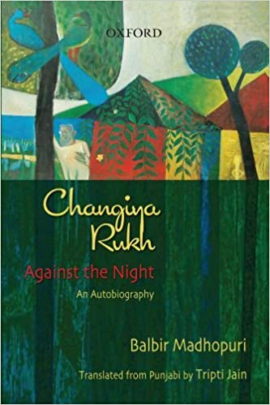

Literature of Protest Balbir Madhopuri’s Changiya Rukh: A Critique of Dalit Identity
Dr. Moola Ram
Department of English,
Ramanujan College (University of Delhi), Kalkaji, New Delhi-19
E-mail: drmramk@gmail.com

The intent of my paper is to focus on theorising Dalit experiences and to attempt how the primary motive of such writing like Changiya Rukh (Against the Night), becomes the mode of Dalit liberation, their struggle against the inhuman Brahminical social system and posing a challenge to mainstream literature. Dalit literature is precisely a literary weapon of social protest and resistance of the Dalits against the Brahmanical culture of hegemony and inhuman social order that not only denies human dignity but it also violates their basic human rights and excludes them from the mainstream of the society. It strongly believes in bringing about social change by making a public display of the injustices and inhuman behaviour of the caste Hindus inflicted on them is indeed the purpose of Dalit literature. Since 1980’s onward, Dalit autobiography has become a dynamic genre of Dalit literature. It is not just an account of Dalit life; it is also a kind of tool by which Dalits can claim their political identity and self-respect. It creates a public platform for a Dalit writer to speak against the social institutions of caste and untouchability. Dalit autobiography functions as a chain in terms of uniting and increasing the relations between the individual Dalit writer and his wider community. To conceptualise a Dalit autobiography, one should go through the specific context of the authors’ writings. The attempt of recalling their past is not just remembering their bygone days but proposing a powerful political philosophy, which is differentiated on the idea of egalitarian discourse. Memorising expression and systematic synthesis of living expression creates a kind of outlet for the voiceless people. Dalit autobiography is an agency of liberation from historical suppression, because in its dealing with history, it questions the superstructure and the attempt of this questioning is itself a beginning of the history of suppressed.
Balbir Madhopuri was born on Tuesday, July 24, 1955 in a family of the Ad Dharmi sect of the Dalits in Punjab, is a Punjabi writer, journalist, translator and a poet, with two collections of poems, Maroothal Da Birkh (Tree of the Desert, 1992) and Bhakh Da Pataal (The Inferno, 1998). Currently, he is working as Deputy Director (News), All India Radio, New Delhi, and as an editor of the Punjabi edition of the monthly magazine, Yojana in the Ministry of Information and Broadcasting, Government of India. He has translated various novels from Hindi and English into Punjabi. His autobiography-Changiya Rukh, originally written in Punjabi and published in 2002. It has been translated into English as-Changiya Rukh (Against the Night), published in 2010, is set in a village of Madhopur in Jalandhar district of Punjab province. Changiya Rukh is the first Punjabi Dalit autobiography translated into English. Until now, the book has gone through five reprints in the last six years, and subsequently translated into Hindi. It is because of this book, he achieved recognition in the literary world.
Changiya Rukh means a tree chopped from the top, slashed and dwarfed. The author applies this particular term as a metaphor for the Dalits, whose potential for growth has been robbed by the Hindu social order. The author recounts the bleakness of life, despite all constitutional and legislative measures. The book raises a question like how a man conducts himself among people who either do not understand him or would like to see him in the slush where they think he belongs. It is a saga of triumph; this real life story relates a Dalit’s anguish of deprivation, social exclusion and humiliation, as well as of resistance, achievement and hope. While writing social history of his community people, he looks very carefully at the systematic social composition, humiliation, cultural and economic exclusion of the Dalits. His attempt of stressing on the past creates a space of collective emancipation for the Dalits, and this may mark the beginning of the Dalit liberation movement. Apart from being the most important characteristic of Indian society today, the notion of caste has not only become a marker of identity for the Dalits in their day-to-day lives, but it has also become the most used weapon for their social humiliation and exploitation by the dominant section of the society. Just because of their low caste identity, whatever education and position they achieve, do not make any sense in the eyes of the upper caste Hindus. Whether seen from a social, economic, religious, academic and political aspect, the Dalits of this country have been humiliated, marginalised and excluded from the basic human rights.
In the very beginning of his autobiography, while recalling his ancestral past during the colonial period and post partition, the author describes how the people of his own community have been segregated from the rest of the village and located on the periphery of the village. He condemns the notion of caste and reminds us that having a low caste identity for the Dalits in India is really a sin or curse whereas it is a blessing for the non-Dalits. It is only because of their low caste identity, they become the victims of ill-treatment and inhuman behaviour inflicted on them by the dominant Sikh castes such as Jats, Khatris and Sodhis. He writes, “If a low caste boy were to come out on the lanes of the village, all bathed and dressed in new clothes, his hair combed, one or the other of the Jats sitting under the trees would get up and throw mud on him. If he protested, he was sure to be beaten up. If an untouchable appeared in the village dressed in new clothes, he was certain to be given a beating on the pretext that the low castes were trying to become the equals of the higher castes; no one knew or could predict when such an incident would occur and where.” (Madhopuri, 2010:4)
During the colonial period, the local British government executives, agents and spies such Zaildar, Jagirdar, Safed Posh and Numberdar forced the only lower caste people, particularly untouchables to work in their fields as slave. The treatment of these people shown towards Dalits is very oppressive, exploitative and terrifying. The author gives a clear image of his ancestral village. He writes, “The zaildar compelled them to do beggar in his field and on his construction sites. If there was no such work available, then he got them to dig up the fields and throw the mud excavated in this way outside the village. A Jagirdar also compelled the untouchables to work free of charge for him, and often the only return they got were blows. The Zamindars were encouraged by them to assault the untouchables. Innumerable such incidents are still related by scheduled caste people who are about seventy years of age-the generation before mine.” (Madhopuri,2010:5).
According to the records of 1914-15, Madhopuri’s birth-place seems a very small village of having a population of about 1200 and of 250 years old, the total area is about 505 acres, there are twelve wells in this village and the common land of the village is around 17 acres as the author recalls. The fact is that Dalits have no wells and no land for farming and the place where their houses are built covers a very small piece of land. Why Dalits have no land or why they have been excluded from natural resources like this? During the colonial power in India, the British government made three land settlements. The first was in 1849-50, the second in 1880 and the third in 1914-15. Gradually, they became a part of our tradition and later known as ‘Rules and Regulations. The author studies various restrictions and responsibilities for the different Dalit communities laid down under Regulation number10 and comes to the conclusion that the rights meant for the Dalits were included only the right to provide free labour to the dominant castes. The author reminds us that in return for the unpaid labour given by the Dalits, they were dispossessed of all basic human rights, which raise various painful questions in his mind regarding the attitude and treatment of the British towards the Dalits. He writes, “The British came to Punjab at the end of their conquest of India. Why did they not give the untouchables the rights of equality, education, property, and freedom of expression? It is evident that they were in league with the staunch adherents of the caste system and were influenced by them. During the hundred years of British rule in Punjab, the Punjab Land Revenue Act, 1887, remained in force, which prevented the untouchables from buying land even when they had the money. The untouchables depended on the mercy of the landlords and jagirdars and spent their lives in fear. The landlords were oppressive in their behaviour and extracted the free labour that they were entitled to, and more. If the low castes tried to say ‘no’ to begaar, they were humiliated and beaten up. Those were enslaved by the British demanded freedom, but they too did not bother about the freedom of those who were their own slaves. On the other hand, they asserted their right to keep them in bondage and justified it on the basis of sacred books.” (Madhopuri, 2010:7)
The author does not much criticise the policies and rules and regulations introduced and implemented by the British regime in India, particularly in Punjab. Neither he does not make a serious complaint against its attitude and treatment towards Dalits nor does he hold it responsible for the violation of their basic human rights. Rather he holds the inhuman Brahminical social division as solely responsible for the violation of their basic human rights, socio-economic inequalities and various injustices thrust on them by the dominant castes. He writes, “There is no other example in the whole world of such an unjust, oppressive, and discriminatory social system that has survived for thousand years. There is no other religion in the world that is the flag bearer of a system which upholds customs which incite hatred, and traditions that are discriminatory and inhuman. In no other country in the world is such oppressive and exploitative behaviour towards women and the working class tolerated, the process of slotting and dividing men has continued down the centuries, and some Indians take pride in it and proclaim that it is this system which has prevented social tension and violence from manifesting here. Such an unjust system would not have survived for so many centuries, had not books like Manusmriti laid down strict regulations against Shudras and atishudras. It is in this context that Dr. B. R. Ambedkar has written that these so-called sacred texts, which are full of conspiracies and are political in nature, are biased, their aim and intention being fraud and deceit.” (Madhopuri, 2010:7-8)
The author feels pity for the entire Dalit brotherhood and anger for Brahminical social order, which has always kept them marginalised and excluded from the mainstream of the society and basic human rights, when he looks back and thinks about his childhood and adulthood days that he has spent in his native village. He brings out a very clear image of rustic Dalit life, where the caste system and untouchability are openly practised even after sixty-five years of India’s independence from the British rule and almost sixty-three years of implementation of its constitution. He feels that no much difference has taken place in the rustic life of Dalits and no change has taken place in the mind-set of the dominant castes towards the Dalits. He writes, “The settlements of the untouchables are always in the lower end-the western part of a village, in Punjab, as it is all over India. This is because this class of people, in accordance with the Hindu social system, are not a part of the caste system and do not belong within the four varnas; even their shadows are to be avoided. Though it is asserted that they are within the Hindu fold, actually this statement is meant to keep the Dalits permanently enslaved. That is why they have been kept out of the mainstream. The second factor was that the dirty water of the village flows towards the west, which is the lower part of the village; and it is believed that they not only pollute clean water but also that these people should live in dirt, mire and slime. This hateful and inhuman system still prevails in the villages of India. The constitution gave equal rights to all citizens and the untouchables traversed the road from Harijans to Scheduled Castes. But the attitude and behaviour of the higher castes towards Dalits have changed as much as they should have in this scientific age. Many laws were not implemented properly, and thus the purpose for which they were made was not achieved.” (Madhopuri, 2010: 9-10)
Having a low caste identity for the Dalits, is the only reason to invite the higher caste people to commit injustices on the Dalits and makes them the victims of their day-to-day humiliation and insult inflicted on them by the higher caste people. Therefore, it will be appropriate to say that the problem of the Dalits in India is caste based humiliation and untouchability, not deprivation. Sometimes, they are humiliated and insulted by the higher caste people in such a bad manner as if they think that they have no connection with this land and are worse than animals. The author goes through all such humiliations and insults inflicted on him by the higher caste people during his childhood days. He further writes, “My father worked for different zamindars, and we would go to houses of these zamindars, sit in their courtyards and put our bowls for rotis. Their women threw the rotis from the top and we would adroitly catch them. On such occasions, I would often think of paste events. I had seen my father storing the grain in the granaries and bins at Iqbal Singh’s house, and heard him mutter, ‘Today, we walk barefoot on this mound of grain, but once it is stored, we would not be allowed to touch it, our touch contaminates it.’ Who will let us come in here tomorrow? I would think of the care the zamindars took of their animals-scrubbing and bathing, and tending them tenderly. Their dogs roamed freely in the courtyard and even entered the kitchen. Their children petted the cat all the time, feeding the kitten milk and…Bhaia and others like him have to carry their own tumblers and bowls from home, work hard for them the whole day, and still their animals are treated better than we human beings!” (Madhopuri, 2010: 33-34)
The author seems very serious about the living standard of the Dalit women within the house and outside the house in comparison with the Non-Dalit women, the treatment shown to them by their husbands and some other difficulties faced by them in their daily life. The Dalit women are considered inferior by the women of the higher castes and they have no right to mingle with them on social events. They work as bonded labourers in fields of the landlords. Madhopuri recalls one particular event of Gugga navami and through this event he brings out a very clear picture of the life of Dalit women in comparison with the women of non-Dalit communities. He writes, “The two-wheeled well stood on the eastern edge of the village, and only the women of Jat, Brahmin and Goldsmith communities went to this well with their offering of sawain. They carried trays with lacy white covers, delicately balanced on the outspread palms of the left hand, with a glass or lota or milk and water in the right. Dressed in beautiful new clothes, they walked confidently, compelling me to calculate, multiply, subtract, add and divide all sorts of things. The pitiful conditions of the women of my community with their dirty tattered clothes flashed through my mind. Their listless faces flickered before my eyes. Their diffident walk held none of the confidence and arrogance of the high caste women. Barefoot, a hoe in one hand, supporting a bundle of grass or clothes on the head, collecting garbage, dry dung pats, or beating their children with the other-that was the picture.” (Madhopuri, 2010:63)
The caste minded higher caste people think that Dalits are meant for their use only, because they think that they have become habituated to injustices and cannot protest or fight back with them. Whether it is be a forced labour in their fields, or be any other kind of hard manual labour, they do not even receive a word of appreciation in return. This kind of attitude and inhuman behaviour of the higher caste people towards the Dalits brings a sense of anger, protest, self-assertion, resistance and revolution against the social system in the mind of the educated Dalits of the present generation, particularly when the author recalls one of his father’s advice when he returns home after beating the drum for the athlete event and feels that the time has come to fight it back and not to tolerate it for any longer now. He writes, “When I recalled the sarcastic comment, another thought occurred to me and my father’s dark visage flashed before my eyes. It was not imagination, but a reality. When I reached home, Bhaia tried to advise me, ‘The athletes have twisted around and hurt themselves, but these zamindars have not given them even a word of praise! I say this stigma of low and high will never end in this country without a violent struggle. If only we had a few acres of land, then we would have not bothered about these mean zamindars!” (Madhopuri, 2010:68)
When the author and his uncle’s son Roshi happen to be in their primary standard, the school teacher Mr. Sodhi, instead of teaching them unlike the other upper caste boys, he forces them to clean the school ground in the morning, and then he sends them to tend his animals in the fields, cut the grass and then bring it to his house in the evening. This is the reason, why most of the Dalit students drop out from schools in their primary standard only. There are very few like the author, who fight back to such injustices and continue their study ahead despite of all the humiliation and exploitation. He writes, “‘Gudd, you and Roshi (Roshan Lal) go home and cut some fodder and chop it up!’ ordered Master Sodhi, suddenly coming out of his opium haze. Taking a pinch of snuff from a long, round iron box, and sniffing it, he added, ‘Go quickly! The buffalos must be hungry and bellowing away. Wash them also.’ Like obedient student, we neither made any excuses, nor did we refuse. We set off for Master Sodhi’s home, which was about three kilometres away from school in village Sohalpur, in the southeast. My thoughts came to sudden halt as if I had put a full stop to them, the way I used to, while taking dictation at school ‘He sends us every third day, but he never tells the Jat boys that they should fetch and chop the fodder for his animals!’ Abruptly, and for the first time, I showed my resentment.” (Madhopuri, 2010:69)
After finishing the work assigned to them by the teacher, the author and his cousin feel thirst, and so they both go to the nearby hand pump, when they are about to touch the hand pump, suddenly Mr. Sodhi’s wife stops them from touching the hand pump and rather she herself pours water to them. The author abuses both the teacher and his wife for the unpaid forced labour and humiliation in his heart, though, he is unable to articulate the words but they remain echoing in his years. He writes, “She made a sign and we went to the back near the gutters, and cupped our hands, as she poured water from a jug, held above our heads. As soon as we stepped out, Roshi exclaimed, ‘First our brothers were serving these masters and tending their animals, and now we have to do all this-Sodhi will not change nor will he die! Stupid fool! Addict!’”(Madhopuri, 2010:71)
After hearing many stories from his father and the blind sadhu about the Hindu beliefs, values, customs and the entire social system, which in fact made the Dalits its slave for centuries and still it holds them captive; Madhopuri develops a very critical understanding about the system and he starts hating it seriously when he happens to be in his school days. After the completion his graduation from Khalsa College Jalandhar, he changes his name from ‘Balbir Chand’ to ‘Balbir Madhopuri,’ because he thinks that the later part of his name ‘Chand’ however, resonates with Hindu belief. He recalls an event of a day when he happens to be in the seventh class at that time. On that day, his elder Bakshi brings home a calendar with a picture of ‘Sita-Ram on it, the moment he sees it, he immediately snatches it from his brother’s hand, tears it off into pieces and throws it on ground and stamps on it. Seeing it all, though his father understands his intention, but he also scolds him by saying that this only attempt of yours cannot change this inhuman Hindu social system. At this, his reaction is worth to be noted down. He writes, “It is said that it is this Ram who murdered Shambuk rishi because he believed in God, I repeated what I had heard, in all innocence, and added, ‘Raja Ramchandra and his people are “Arya Putras”, from alien lands, and they felt that they were superior to us-the real inhabitants of this country. They snatched power from us, and made us untouchables, they tricked us into slavery and they were extremely cruel to us. If a fortress was to be constructed, then it were theachchuts who are to be sacrificed, if there is any ‘sacred’ work to be performed, then an untouchable is to be made a scapegoat, and all this evil is being perpetrated in the name of religion.” (Madhopuri, 2010:167)
After listening carefully Madhopuri’s arguments about the incident, his father tells him many things about the past that he has been an eye-witness. He asserts and makes his views clear about Hindu social system and its fraud to his son with full confidence as if he is trying to see his future in his son. The author writes, “I also want us to strike at the deep-rooted hypocrisy of Hindu society, the way our banyan trees were uprooted and cut into pieces. But one man cannot do anything, it must be a joint effort, and it needs a courage and dedication.” (Madhopuri, 2010:167)
When Madhopuri is working as store keeper in FCI at Bhogpur in Punjab, One day, he meets a Bihari young man of about twenty-three, Rajendra Yadav by name, at the bus stop. Madhopuri is filled with pity when he sees that the young man has lost both hands. Rajendra looks at him with helpless eyes and asks him for financial help. He tells him the whole story about how he lost his hands and he assures him to make some arrangement so that he can get back to his native place in Bihar. He writes, “The next day, I took Rajendra to meet my good friend Purshottam Sharma. I had also brought a bagful clothes from home for Rajendra. After dinner, he washed his amputated hand and coming into the room, looked at the pictures on the wall carefully. Then he asked, ‘are you a Chamar?’ Sharma had put up some pictures of Hindu devi-devtas, the Sikh gurus and various saints on the wall. ‘What is the matter?’ Isn’t that Raidas’ picture? Sharmas are not Chamars! Rajendra asked. After a moment he went, ‘now that I have eaten…’ ‘Why don’t you throw it up if you feel that way,’ I remarked. ‘My right hand is still intact, thank God. I can eat and rinse my mouth and perform all other tasks,’ he said a little shamefacedly, and trying to change the direction of the conversation. Anyway, we brought his ticket and also dispatched some money which we had collected from various friends to his address. For many days the thought that this Bhaiya, who has lost his hands and was destitute, was still not willing to give up the caste system, troubled me.” (Madhopuri, 2010:178-179)
Madhopuri quits FCI after his selection through UPSC in the Ministry of Information and Broadcasting and joins as a class 2nd non-gazetted officer at the Jalandhar office of Press information Bureau in June 1983. After the completion of probation, having been promoted, he becomes a gazetted officer in 1986, and the next year i.e. in 1987, he is transferred to Delhi. After living a couple of years with his elder brother in Delhi, he gets married and starts looking for a rented accommodation. After a long search and various difficulties, finally he gets a renting room in Munirka. One day, when he returns from his work, the house owner directly asks Madhopuri about his caste. He writes, “‘Bhai, don’t be annoyed, but which caste do you belong to?’ ‘We are Sikhs’; I would answer, adjusting my turban. Don’t be angry, once I was travelling by train from Agra to Delhi and a sardar and his wife were also travelling with me. They were well dressed and the man appeared to be educated. And I asked him about his caste. Like you, he also said, that he was a Sikh. I told him, ‘Sikhs also have caste’ which caste do you belong to? He hesitated at first, and then he said he was a Ramdasia. ‘When he told me that he was a Ramdasia, what more could I talk to him about-I turned my face the other side’, the elderly Gujjar proudly told me.” (Madhopuri, 2010:202-03) At this, Madhopuri feels that the first phase of his humiliation in Delhi has begun. He immediately leaves this place and moves to Sector VIII in R. K. Puram, and then to Jain Mohalla in Palam village and finally, before buying his own house, he moves to Mahavir Enclave in Palam village. At all these later places where he lived, he feels very humiliated and realises that the stigma of having a low caste identity for the Dalits, is really a curse which keeps on humiliating them wherever they go. His dilemma is that while he seeks his identity in his Dalithood, his Ad Dharm sect, he yet looks forward to a kind of social change whereby an individual would not be identified by his caste. Thus, he strongly condemns the inhuman Hindu social system and feels that there is a serious need of rational philosophy and collective efforts to fight against such forces which support it; so that we can bring about social change and equality. And this is how Balbir Madhopuri in his autobiography describes that how one’s caste and especially belonging to Dalit community shapes one’s identity in the social framework of India.
REFERENCES
Primary Source(s)
Madhopuri, Balbir. Changiya Rukh (Against the Night). New Delhi: OUP, 2010.
Secondary Sources
Ambedkar, B. R. In Mulk Raj Anand (Ed.), Annihilation of Caste: An Undelivered Speech. New Delhi: Arnold Publishers, 1990.
Baker, S. Caste: At Home in Hindu India. New Delhi: Rupa publication, 1991.
Bama. Karukku. Trans. Lakshmi Holmstrom. Chennai: macmillan India Limited, 2000
Basu, Tapan. (Ed). Translating Caste. New Delhi: Katha, 2002
Bose, N. K. The Structure of Hindu Society. New Delhi: Orient longman, 1994.
Limbale, Sharan Kumar. Towards an Aesthetics of Dalit literature: History, Controversies and Considerations. Trans. alok Mukherjee. New Delhi: Orient Longman, 2004.
Dr. Moola Ram is teaching as Assistant Professor in the Department of English, Ramanujan College (University of Delhi), Kalkaji, New Delhi. He has earned his M. A., M. Phil. and Ph. D from CES, SLL & CS, JNU, New Delhi-110067 (India). His areas of specific interests are Indian English Writing, Dalit Literature, Afro-American Literature, Feminist Theory and Contemporary Literature. He has published a book, i.e. Mulkraj Anand’s Untouchable: A Mirror of Dalit Life (2010) and has presented and published a couple of research papers and articles in various National and International Conferences and peer-reviewed journals. Apart from these, he is also a member of editorial board for Creative Forum: A Journal of Literary & Critical Writings and Literaria: An International Journal of New Literature across the World.
An International Journal in English, April 2014, Vol.5, Issue-2
Balbir Madhopuri’s Punjabi autobiography Chhangia Rukh (Against the Night) appeared in 2010 and stirred the Punjabi literary world by baring the real rural social life the way it was not done before.
As far as the region of Punjab is concerned, Balbir Madhopuri gives us an interesting insight into the issue through a conversation between his father and a few people from Uttar Pradesh, whom the Punjabis preferred to call the easterners. One of the men from UP sings the blues about how they cannot use names like the ones used by Thakurs or Rajputs. If they do they get beaten up. He adds:
The conditions in eastern Uttar Pradesh are deprolable – the doli of the bride
still goes directly to the Thakurs. They send for our daughters and daughtersin-
law whenever they feel like (Madhopuri 72).
Another one bewails:
Don’t ask what happens during the Holi festival – the Thakurs come in the
evening, drunk and armed with lathis, and order our women to entertain
them... We want to stay here in Punjab, where things are not as bad. There is
less rigidity about untouchability also... We have been living here for the last
three-four years and have observed things (Madhopuri 73).
Source Courtesy:
Caste in a Casteless Language?
English as a Language of ‘Dalit’ Expression
- Rita Kothari
Changiya Rukh an autobiography by Balbir Madhopuri, re-tains its title and refers to a tree that has been deliberately stunted from the top; however, the same tree may also havethe resilience to bring forth fresh branches and leaves. The ti-tles successfully evoke for the English reader (also) the simul-taneity of subjugation and resilience. It is unlikely that wordssuch as the ones described above would easily form a part of living and dynamic vocabulary in English, like other forms of interactions bet ween Indian languages and English, whichcreate creolised mixtures.
The phoenixes of banishment and oppression
Author: MeenaKandasamy
Published Date: Feb 28, 2010 10:36 AM
Last Updated: May 16, 2012 2:57 PM
Dalit autobiographies are the most marketable genre of their literature today.
Recently I had the opportunity of reading ChangiyaRukh (Against the Night), the first Punjabi Dalit autobiography that has been rendered into English. ChangiyaRukh means a chopped tree — a metaphor of mutilation and a symbolic image of enforced stunting — of something made small and inferior so that the others appear larger and superior — an excellent parallel to the position of the Dalits in this deeply divided society.
Balbir Madhopuri movingly describes rural poverty and the hunger in the dry, winter months, the closely-knit relationships among the Ad Dharm community to which he belonged and the centrality of his 100-year-old grandmother in shaping the lives of not only her immediate family, but almost every woman in that village. Burdened with the stigma of untouchability in the Jat heartland, he grows up to learn that tea is an inferior drink because only the lower castes drink it, whereas milk was the staple beverage of the upper-castes.
In Changiya Rukh, he documents the inner turmoil to which Dalits are reduced whenever they have to conceal their caste identity. We observe instances of how, sometimes, the Dalit people themselves internalise the view of caste-Hindu society and develop a feeling of inferiority. Simultaneously, Balbir reveals how he was so upset with his Hindu-sounding surname that he dropped it and instead took up the name of his birthplace Madhopur. By expunging one identity, and taking on another, he succeeds in rejecting an entire history of oppression.
He notes how neither the Communist movement, nor the movement for an independent Khalistan actually addressed the problems of the Dalits. The pleasures of discovering Communist literature and writing revolutionary poems is short-lived since Balbir’s immediate task at hand is to take up a job and support his family. He moves to Delhi, and with his wife and children, struggles even to find a house since caste Hindus are unwilling to rent their flats to a person they suspect is a Dalit. Modern literature is replete with instances of what it means to find one’s home, and literary discussions are rife with the idea of returning home, but from a Dalit perspective, the stark reality associated with ‘home’ is managing to find accommodation.
Dalit autobiographies, since their first, stunning arrival on the literary terrain, address such divisive issues that refuse to go away. Autobiographies are also the most prominent and marketable genre of Dalit literature today. The caste-Hindu elites’ interest in Dalit autobiographies spring not only from the fact that they satisfy the voyeuristic curiosity of the non-Dalits by documenting the lived experiences, but they also provide them the necessary guilt-trip.
Om Prakash Valmiki’s Joothan dealt with the Bhangis in Uttar Pradesh, Sharan kumar Limbale’s Akkarmashi portrayed life in rural Maharashtra, Vasant Moon’s Vasti (translated by Gail Omvedt as Growing Up Untouchable in India) spoke of life in an urban Dalit slum, and Kesharshivam’sPurnasatya highlighted the plight of Gujarati Dalits.
Narendra Jadhav’s memoir Outcaste probed what it meant to be a highly educated Dalit. The publication of Dalit autobiographies, coupled with their literary assertion has recast and revitalised the literatures of the regional languages. Semi-fictional narratives like Bama’s Karukku and Siva kami’s Grip of Change recorded what it meant to be young Dalit women under the shadow of casteism. Urmila Pawar’s Aydaan (rendered into English as The Weave of My Life) is not merely testimony but also manifesto — seeking to locate the position of the Dalit woman within the stifling constructs of casteism and patriarchy without sensationalising or romanticising suffering.
Every narrative has unfailingly recorded how the rural structure is strict in its segregation: Dalit wadas/ cheris/ colonies/ bastis were all set away from the caste-Hindu village, a banishment that was brutal not only because of the geographic exclusion but also because of how easy it became for the oppressors to launch violent attacks on the Dalit people. These first-person life stories are a means of expressing angst and assertion, they reverberate with an experience of pain and discriminatory politics, and they uniformly seek to exorcise the ghost of untouchability that has haunted their communities.
For a nation that lives in such denial of a basic truth, such authentic narratives will hopefully lead to a greater engagement with understanding, and possibly, eradicating caste.
The writer is a poet and critic based in Chennai.
meena84@gmail.com
Source Courtesy: The New Indian Express
Editorial : GSP Rao
Veli, Tiruvananthapuram. Courtesy- Kerala Tourism
Contemporary poetry from Kerala
Kerala competes with Bengal in its literary and cultural fervor and energy. In no other Indian State is high-literacy-rate as widespread and reading-habits as deep-rooted across all social strata as in this State. This milieu has consistently produced works of high merit in literature and other creative fields like films and fine arts. The State is endowed with a long coastline of enchanting beaches, dense and rich flora, and meandering backwaters that run across several regions, offering nature's benevolence to its people. Marketing mandarins have capitalized on this bounty to call the State 'God's own country', a label that is now recognized worldwide. This natural splendor has no doubt served as a powerful muse to all creative effort.
There are several literary luminaries in Malayalam literature, including KumaranAsan, Vallathol Narayana Menon, Kavithrayam of Cherusseri, Ezhuthachan and Kunchan, and Jnanpith awardees SankaraKurup, Pottekkatt, Sivasankara Pillai, Vasudevan Nair and ONV Kurup. To this we can add AyyappaPaniker and K Satchidanandan of more recent times. Malayalam literature prides itself with most number of Jnanpiths after Kannada.
Kamala Das shot into national limelight with her daring poetry in English. Arundhati Roy won the Booker in 1998 for her 'The God of Small Things' that brought international focus on Kerala writers and literature. ShashiTharoor and Anita Nair among others have been quite prodigious with their compelling works in English. Thus, English literature too has come of age in Kerala.
The trend continues with a large number of young writers and poets meriting attention. In this Issue we bring focus on contemporary poetry from Kerala, covering both Malayalam and English. The section has been painstakingly compiled and edited by the young and talented poet, Anupama Raju, who writes in English. Most of the Malayalam poems featured here have been translated by veteran K Satchidanandan that ensures high quality. We express our deep sense of appreciation to both Anupama and Satchidanandan for bringing this wonderful anthology to the readers of Muse India.
We are delighted to present the paintings and sketches of the noted contemporary artist of Kerala, Sajitha R Shankar to accompany the work of each poet in the section. The images have added great aesthetic appeal to the section and we are grateful to Sajitha for readily agreeing to share her work. Her remarkable work can be viewed at her website www.sajithashankar.com.
Life Writing
I have always enjoyed biographies. They are real life stories grounded in situations we can relate to, unlike the fanciful plots of fiction. Today, the genre has gone far beyond biographies to cover different forms of personal accounts, including blogs and emails, recognizing the widespread use of these technologies for personal expressions today.
This Issue features Life writing as an important literary genre with several articles and extracts from biographies and autobiographies that give rare insight into the lives of persons covered. The personalities chosen are from a wide range of fields including philosopher and statesman, Dr Sarvepalli Radhakrishnan; noted carnatic musician MS Subbulakshmi; social worker Chandraprabha Saikiani; the two politicians in news today - Rahul Gandhi and Narendra Modi; sex-worker and social activist Nalini Jameela; veteran film actors Durga Khote, Savitri and Nagaiah; badminton star Saina Nehwal; noted women writers Ismat Chughtai and Kumudini; and eminent Dalit voices Balbir Madhopuri and Sharan kumar Limbale, among many others. The personalities are drawn from all parts of India, from Assam to Kerala, Bengal to Gujarat, Punjab to Tamil Nadu. Glimpses from their lives show the vastly different circumstances they confronted, and succeeded to make a distinct mark in their respective fields. They are inspirational stories indeed.
Prof Udaya Narayana Singh wrote the thought-provoking lead-article on Biographical writing and Dr Shyamal kanti Chakraborty contributed an essay that deals with romance of letter writing (Patralekha) in Indian classical literature and arts. Many others have contributed eminently readable articles on the lives of several noted personalities. We are thankful to each one of our contributors for responding to our call for contributions.
THE LEAF OF HOPE ON THE LOPPED TREE (CHANGIYA RUKH)
New Delhi is the Capital of India, the centre of Indian power. Prime Minister, cabinet ministers, bureaucracy, opposition parties, various NGOs and labour organizations including left and dalit groups are vying to grab their share of power. Every leader and writer presents himself/herself as an intellectual or philanthropist. Here the President has a big 'Rashtrapati Bhavan' as his home, covering a vast area of 130 hectare. But one person who indeed is an intellectual and also a philanthropist is Balbir Madhopuri, living in Palam, New Delhi. He earned his own 'Pucca Ghar (Cemented House)' which was his dream from childhood. His journey from his native land Madhopur to Delhi is full of difficulties. Balbir Madhopuri is known as a dalit writer, journalist and translator.
It was in February when I first met him at his residence. He was very active and well dressed but I was thinking time and again that he is the same person whose childhood passed barefoot. Today, in his house basic necessities are available but he never forgets the days of humiliation, starvation and child labour. He makes an impact on everyone with his forceful voice and pleasing personality. I had spent over 4 years in Delhi but never met a person who is down to earth like him.
Autobiography : Changiya Rukh (Against the Night)
Statistics present Punjab as the most developed state of the Indian Union. More than 28 per cent of its population are Dalits, the highest in India. Though there are many books and articles on working conditions of Dalits in Punjab, one can't ignore Balbir Madhopuri's autobiography. “Changiya Rukh” means a tree lopped from the top, slashed and dwarfed. Madhopuri uses it as a metaphor for the Dalit and ‘untouchables’ whose potential for growth has been 'robbed by the Hindu social order'. Significantly, by bringing forth fresh branches and leaves, the lopped tree proves its innate worth through defiant resilience.
Balbir stringently attacks the religious institutions for perpetuating casteism and mentions this as the cause of separate Gurdwaras of Dalits in almost every village of Punjab. By giving examples from his own life, he describes his own decision of boycotting the Gurdwaras after facing humiliation. He narrates his experience as "Every month when Sangrand or a Gurpurab was celebrated in the Gurudwara, we used to go for getting Parsad or having food from the free community kitchen. The organizers used to call us bad names because of our caste and uttered such words which should have no place in any religion. We used to be pushed like cats and dogs to a place where the people sitting inside take off their shoes. Bhai ji used to throw Parsad upward towards us so that his hand does not touch our hands. Many a time Parsad would not fall into our tiny hands folded in a bowl shape to get it but used to fall on the ground. The dogs standing nearby in expectation used to eat it losing no time. When the people used to leave, the dogs would get inside and search the Parsad which had fallen down by smelling here and there and eat it. If somebody tried to hit them, the other would easily and instantly say that ‘a dog is a recluse; it would go out just with a minor threat.’ Undergoing such a treatment, I stopped visiting the Gurudwara in my childhood itself. At that time, I was perhaps studying in class two. Our ancestors never visited that place as we were never a social part of the Hindus or Sikhs".
Balbir Madhopuri did child labour and also faced discrimination at almost every place. Even in the school, the experiences were no longer different. His teachers (whom we expect to rid the society from these evils) also discriminated with him. The real meaning of untouchability was laid bare before him. He mentions, “The fellow students, boys and girls used to behave in the same manner and kept a distance from us when we used to take water from the school water well. They used to wash away with water our pollution and then only take water. When piped water came and a tap was fixed for drinking water, they used to wash the tap first and then only take water. While at school, I and my classmates belonging to my caste used to walk more than three kilometers to village Sohalpur to wash and feed the animals of our Khatri teacher. We were not allowed to drink water from the water tap in his house even if it was extreme hot and we were dam thirsty. Our teacher’s wife used to give water to us from a distance above and we would drink it by accepting it in our hands folded in a bowl shape."
Differences with communists.
In 1975, he became a member of the Communist Party to bring in revolution. He used to raise slogans like ‘workers of the world, unite’ and ‘Kisan-Mazdoor Unity Zindabad’. In protest, a jat comrade proud of his caste, left the party and joined Panthak party (a Sikh political party). During the discussion on the demand for raising the daily wages by one rupee a day, all jat comrades sided with their community. He also noticed the awful behaviour of communist leaders with dalit women. He lost his faith in the Communist party. Though the communists spoke for the exploited and the poor, they did not try to permeate to the lowest stratum. He concluded that today it is most important for dalits to get educated and stand on their own feet so that they can uplift themselves and break away the shackles of caste discrimination.
Purpose of Autobiography
This autobiography articulates the experiences of a common man who tries to analyse the position of Dalits in feudal dominant society of Punjab. It reveals the predicament of the lower classes in the Hindu caste system. It traces the social history of Dalit community in Punjab, and brings out the caste relations based on prejudice and inequality. The book has been contextualized within larger socio-historical processes as it also includes the experiences of the writer as an urban-dwelling member of the middle class. Here he draws parallels between the life in a metro city and in the villages of Punjab to expose the reality behind the institutional narrative that caste no longer works as a significant force in the public sphere of modern India. Even to get basic amenities in life, he had to face humiliation, exclusion and discrimination.
By choosing writing as a medium, Madhopuri transforms an experience of pain into a narrative of resistance. The idea of contesting untouchability is expressed within the narrative, specifically regarding the construction of Dalit subjectivity. Through his own experiences, he articulates the problems, suffering and pain of the whole community.
This book has been read by thousands of readers since its publication. It has also been translated in Hindi and English. The English translation of the text titled "Against the Night" has been published by Oxford University. It is translated by Tripti Jain. Indeed, one who wishes to understand the socio-economic scenario in Punjab and the distribution of means of production, “Changiya Rukh” provides critical insights to the contemporary reality.
-Avtar
07837859404
In search of form
MRIDULA GARG
Source Courtesy: The Hindu | July 31, 2010
A powerful literary testimony to the angst, suffering and attempted rebellion of a dalit community in Punjab
Before I review Changiya Rukh (Against the Night), I must record my strong objection to the semantic quibble asserting that caste is not on par with race; or else, I lose the right to review this or any dalit work. Caste-based discrimination is one of the worst forms of racism because it is practised against one's own countrymen. Like race, it is determined by birth and does not end with death but passes from generation to generation. In theory, it is possible to escape caste (unlike race) by changing one's religion but in practice, we know, caste follows us into whichever religion we convert to.
At first sight, Balbir Madhopuri's Changiya Rukh is a dalit autobiography like many others with all the ingredients that shock and shame non-dalit Indians; or ought to. The unimaginable, horrific struggle for the barest minimum of survival and the daily brutalisation of human instincts are etched as is the incomprehensible capacity of people to survive, escape the tentacles of caste repression and become people of consequence.
In the words of Madhopuri himself:
Many a time
I'm dwarfed
Like a tree cut at the top
Over whom passes the power line
I get pruned out of season
When in passing
Someone is curious to know what my caste is.
Sensitive portrayal
Changiya Rukh is a powerful testimony to the suffering, angst and attempt at rebellion of the dalit community of chamars in Punjab but it is something more. It is this something, which makes it significant as a literary work. It is a lively chronicle of a host of people, each significant and memorable, not as a representative of a caste in one part of the country but as an individual.
There is the sensitive boy, planting a mango sapling, acquired with great labour, in his mud hut to have it roughly snatched by his father (Bhaiya), telling him not to ape upper-caste Jats. “My heat wilted like the plant. A storm had blown away the flowers of my desire. Even so, I thought we too should have a tree in our courtyard, so the sparrows, doves, and parrots may come to perch and bicker on the branches.” I heard the future poet in the little child as I read the lines and my heart wilted too.
He is too small to understand the meaning of caste or of defilement, for which he is taunted, abused, beaten, and denied basic human needs. But he has no option but to understand quickly or suffer more humiliation.
There is the dalit grandmother, Daadi Haro who, by sheer force of personality and an acrid tongue, holds her own against everyone. “If a Jat woman (or any other woman) passed near her without wishing her, she would say loudly, “Wonder which arrogant bitch just passed by.” Daadi's authority is unchallenged. One day, Taro Tai (who belonged to a Jat family) and Chachi Chinni are on the swing … when Daadi sees them, no one knows what happened but she shouts, “‘Is this the only work left for these wanton women? They are not bothered about their husbands… Loose women! Bad ones!' The swing stopped… the onlookers slunk away.”
Still around
There is the rebellious Phumman, who tells a Jat landlord, “Threaten someone else; those days are gone when all of us bowed and scraped before you. Think before you speak or else I'll pluck your beard.” Alas, ‘those days' are not really gone, as Madopuri realises when he becomes an assistant editor in the city. “It seemed to me that the curse of caste had permeated our society and there was no indication of its dying out soon. Then it suddenly occurred to me that the Muhay formula may be the most effective method of establishing social equality.” The Muhay formula is no different from the Phumman formula, deliver a sharp slap, termed a ‘humanist slap on the face of casteism', by the writer. Muhay gave a Punjabi poet a resounding slap, when he kept taunting him about his caste, saying, after retirement, he could sit under the Neem tree and polish shoes.
Seeds of hope
The oppressed and hapless father, Bhaiya, too declares time and again in the chamarli of the village, “No one has the time to listen to our plea that this caste system was not ordained by god, but has been made by man for his own selfish motives.” Though his ranting and railing serves no purpose and he often ends up thrashing his sons, his rejection is heartening. As is his instilling a yearning in Madhopuri to study and escape the drudgery of his birth and help others do it too, through political action. The mother, bua, and other women are more down to earth. They accept their so-called fatebut find ways of dealing with it with courage, determination, even benevolence. They somehow manage to retain their person-hood and deal with life as women and mothers do, anywhere, anytime. There are innumerable minor characters who, transcending the caste-stereotypes, show their human face, to make the writer title a chapter as ‘an oasis in a desert'.
As I read this personal saga full of brutality and pathos, I could not help wish that Balbir Madhopuri had used the powerful yet intensely humane material, gleaned from personal experience, to weave a novel rather than an autobiography. It would have given him the freedom to edit and prune the repetitive and sometimes inane details. It is a paradox of human psychology that fictionalising facts does not reduce but increases their credibility and poignancy. A well-honed novel has a greater impact as a chronicle of truth than a recital of unedited events. I could see a vibrant and unique novel straining to get out of the pages of this autobiography. The fact that I finally read it as a novel is a tribute to the literary sensibility of the writer and the compassionate participation of the translator Tripti Jain.
Changiya Rukh, Against the Night: An autobiography, Balbir Madhopuri, translated from Punjabi by Tripti Jain, OUP, 2010, p.215, Rs. 395.
Punjabi Literature Dalit's passage to consciousness
Jaspal Singh
The Sunday Tribune, September 28, 2003
INDIA, from time immemorial, has remained a fragmented society owing to the caste system. Almost one-fourth of the country’s population constitutes what B.R. Ambedkar called the "depressed classes". Though there have been many saints and social reformers who castigated the caste system in India since medieval times, there overall impact has been peripheral. Only in 20th century Ambedkar was able to sharpen the consciousness of the "untouchables" as a "class" and groom them as a powerful constituent of the present-day political system.
In recent times there have been a host of publications mainly dealing with the "Dalit situation" in India. A parallel body of literature called "Dalit literature" has appeared on the literary horizon that perceives the world from the Dalit angle. There are quite a few Dalit ideologies and theoreticians. Many universities have Ambedkar Chairs dealing with the theoretical aspect of Dalit consciousness.
Recently a few Dalit writers have published their autobiographies that dilate on the Dalit situation and the process leading to the emergence for a distinct Dalit consciousness as a parallel ideology. Mention may be made of Om Parkash Valmiki’s Juuth and Baby Kamble’s Jiun Asasda (as translated in Punjabi by Soma Sablok).
Now an autobiography of a Dalit Punjabi writer Balbir Madhopuri has appeared focusing on the situation of Scheduled Castes in Punjab in the last half a century. Chhangia Rukkh (Navyug Publishers, New Delhi) is both a life story and a social critique of the caste condition in this region. Balbir was born at Madhopur, a small village near Bhogpur in Doaba, in a poor "Chamaar" family a few years after Partition.
His childhood, school and college days are meticulously portrayed without any gloss whatsoever. The author has tried to delineate every minute detail in his "Chamarli," as he calls his locality situated on the south-western side (direction of the setting sun) of the village. The filth and squalor and the improvised mud houses exposed to the vagaries of nature are presented for the readers to have a glimpse of life surviving on the margins of society.
There are many situations in this autobiography where the Dalit-Jat conflict explodes over socio-economic issues in the village structure but is contained with the intervention of the elders. The arrogance of a few Jat bullies always becomes the cause of such blow-ups. The Dalits, on the whole, remain subdued for obvious reasons unless they are forced to challenge the bullies. Time and again Dalits curse the Creator for their situation.
Despite extreme adversity, Balbir is able to receive college education and after doing his post-graduation becomes a junior officer in the Information Service. His days at Jalandhar during his post-graduation are a turning point in his life as a writer. He comes in contact with many people in the media and starts moving in the Leftist circle, which adds to his consciousness level. But he also finds that some of his Communist friends have a feudal approach to many socio-economic problems. While posted in Delhi, Balbir has to live in rented accommodations and faces problems with caste-conscious landlords.
Two characters in this autobiography stand out head and shoulder above the others. They are author’s mother and grandmother. Both the women display a lot of patience and perseverance and they never lose hope even in the most trying circumstances. Another nodal point in this autobiography is the banyan tree in the basti, where one has a glimpse of the socio-cultural life of the Dalits. In the course of time Balbir’s family is able to get out of the social morass, though in a limited way.
This autobiography appears at a time when a lot of social churning is taking place with far-reaching political consequences. Madhopuri in these 200 pages presents a short history of the Dalit situation in Punjab. Apart from writing half a dozen books, including two collections of poems, he has done a lot of translation work in Punjabi, including Catherine Clement’s well-known novel Edwina and Nehru.
A Required Reading for the Poor of the world
Balbir Madhopuri : Chhangia Rukh
(Autobiography in Punjabi)
A Review by Dr. C.D.Sidhu
Balbir Madhopuri’s autobiography Changiya Rukh is an inspiring Epic of Endurance. It narrates heart-rending story of the growth of a child during the first half century of India’s Independence. The children of the landless poor, the untouchables (dalits), continue to live lives worse than the bond slaves ages ago. And that too in a part of India which boasts of being fertile, prosperous and progressive.
Balbir was born in 1955 in the Doaba region of Punjab - the land between the two rivers Sutlej and Beas. His village Madhopur is situated in Jalandhar district and his relations are spread over Hoshiarpur district. Balbir’s family had no land and no secure means of livelihood. As a labourer, his father gets only seasonal employment. The rest of the year he and his community try all sorts of crafts — weaving, shoe-making and the like. Feeding a big family is a constant struggle. And there’s the daily humiliation hurled on them by the landed castes. Balbir’s father is bitter and angry - angry against the exploiting rich castes, angry against his numerous children whom he must feed and educate, angry against the unjust social and political system, angry against the sacred Hindu books which have always preached the slavery of the Shudras and Ati-shudras (untouchables). Nevertheless, Balbir’s father endures. He endures all the hardships. And lives to see his sons grow up into educated respectable individuals who can match the upper castes on their own grounds.
The cry for Justice of Balbir’s grandmother and father and the whole dalit community is the refrain of the book. This protest against the exploitation of the hewers of wood and drawers of water is the most wholesome part of this epic narration of the dismal lives led by the poor villagers. Balbir enlivens his story by detailing the revolutionary social movements led by Dr.B.R. Ambedkar and local leaders like Babu Mangoo Ram Mugowal of Ghadr Party, for freeing the dalits from the tyranny of the upper castes.
Balbir is a brave man. He confronts the bitter Truth squarely. And he tells it like it is. Balbir is neither sentimental nor cowardly. He ridicules the attempts of some of his dalit friends to hide their caste. Some grow long hair in order to pass for upper caste Sikhs. Others flaunt sacred threads to be accepted as Brahmins. Then attempts are pathetic. And doomed ! Even in the metropolis, the rich castes continue to humiliate them as untouchables. The Communist companions of Balbir prove to be equally hypocritical. They seek the support of the depressed classes for their own benefits. But when the dalits demand equal share in the land and the jobs, the red revolutionaries turn their tail.
Balbir Madhopuri is a writer of exceptional talents. Primarily a poet, Balbir has a flair for the fine rustic phrase. And he is a master of the art of characterization.His Dickensian sense of the oddities of the people in his village and his eye for the surprising detail, give us same unforgettable portraits.
Balbir Madhopuri’s autobiography deserves to be translated into all the major languages of the world. It should be made the required reading for the children of the have-nots. It is a rare account of the struggles and ultimate victory of the ever humiliated but heroic child who grows into a great writer.
(PRATIBHA INDIA- April-June 2004)
Chhangia Rukh (an Autobiography) by Balbir Madhopuri
A Critical Appraisal and an Overview by Baal Updesh Anand
This bare, bold and tragically-touching beautiful literary creation of the autobiographical kind, first published as a book under the above title in January, 2003, has been receiving a wider appreciative acclaim of the select top critics and the limited but cultivated readership of the Punjabi literature. The fact that the book has already run into two hard back and three paperback editions is indeed a great news which should cheer up all those who are always complaining about the vaporous nature of the readership of Punjabi language. The poetic title of the autobiography – Madhopuri made his literary debut with an anthology of poems titled, ‘A Tree of Desert’ (1992) to be followed by ‘The Smouldering Underworld’ (1998) – could, perhaps, be faulted by a Botanist but it does pinpoint the deep deprivations and corroding compulsions encountered by an Indian born an Untouchable in a landless family in rural India – here in a comparatively progressive State of Punjab – even decades after Independence and adoption as law of the land of the noblest Constitution crafted by Dr. B.R. Ambedkar, the greatest thinker-emancipator in the history of mankind.
It may indeed be educative to note how the Untouchables have undergone significant transformations since the scriptural Shudra / Achhuth / Bahishkrit; socio-economic Depressed classes; Gandhian Harijans; Secular and constitutional Scheduled Castes till the contemporary nomenclature of the Dalits, echoing daring defiance, political protest, solidarity with all the oppressed in the world, particularly the Black in the U.S.A. It is mainly since the sixties of the twentieth century that, in practical parlance, the word Dalit becomes an explosive catchword for social, cultural and political revolutionary movements launched by untouchable castes, essentially the Mahars, in such expressions as “Dalit literature” and “Dalit Movement”. The period was to witness an eruption of many luminous minds – hitherto branded ‘the lowest’ in the Hindu social dispensation – in powerful literary outbursts challenging the social & cultural value system. The ‘Dalithood’ has signaled its arrival as an ideology: its literary reach has been spreading to all the languages in India. While the poetry and short stories with the ‘Dalit’ themes have been in the forefront, it is the Dalit autobiographies which have created waves and with their translations in Hindi and English; they have led to literary discourses at not only the national but international level also. The Dalit autobiographies ought to be studied ‘as an authentic source of Dalit Cultural identity as well as an attempt to re-inscribe Dalit identity in positive, self-assertive terms.’
In the opening chapter, ‘The Rationale of a Dwarfed Tree’, Balbir Madhopuri is disarmingly candid in explaining the idea of the writing of this autobiography and the genesis of this book of deeply personal and intensely closer encounters and experiences of the life of the ‘Dalit kind,’ Intriguingly, he was ‘provoked’ – rather than inspired – and even challenged to attempt a better piece of writing than the one he was belittling, elaborating on the pains, privations and the dehumanizing realities attendant upon the Dalits. He further adds how the real-life portrait, ‘My Grandmother – a History’ was first published in the eminent Punjabi monthly of the yester-years, Aarsi, in Dec., 1997 by the generous patriarch publisher Bhapa Pritam Singh who also promised to publish the full autobiography. Madhopuri also acknowledges that the words of encouragement and appreciation by the well-known Punjabi writer Ajit Cour became a source of inspiration for the 42 years old budding poet-author who, although a lower – middle rung official of the Govt. of India, started receiving recognition in the ‘big-complex- literally-world’ of the capital of the country as an author with a ‘distinct point of view’. The author, in the opening remarks of the book, has painstakingly pointed out how he had to, as if, “unfold” his “self”, layer by layer; enter into a deeper dialogue with “self” : searching for the ‘identity’ of the ‘self’ and attempt to make up his mind to ‘write down all that’. He further admits, “Believe me, when I would read what I had myself put down on paper, tears would trickle down my eyes and I would feel choked”. The author confesses that he had to pause a while, reading what had been written, thinking ‘what horrible indignities my forefathers must have endured!’ A few more autobiographical articles were published later in the other important literary magazines of Punjabi – more accolades from the leading Punjabi writers followed, ‘it is nice that you are writing, focusing on this topic i.e. Dalithood – so far it has been an ‘unplugged’ field (in Punjabi)’. There were also a few doubting Thomas’s suggesting that it was, perhaps, too early in life and that there were not enough literary or personal attainments justifying a full length autobiography. The dilemma of all these factors coupled with sheer shortage of time, according to the author, caused a delay of almost five years for the publication of the book under reference.
The author states in clear terms that the events elaborated in the autobiography are ‘one hundred per cent true’ and even the names of characters have been retained in their popular nomenclatures – ‘imagination has been brought into play, more to carry forward the sequence of conversations and to maintain the contexts’. The author further underlines that he did not to make any special effort to ‘build up the typical atmosphere of the rural life (of Doaba region of Punjab) and that the purpose of writing the autobiography had become quite clear in his mind – ‘to make the contemporary and the generations to come to be fully aware of the stark realism of the heritage of the dire poverty and excesses at every step in the lives of the Dalit community’. The author wonders why the progressive intellectuals have mostly chosen to remain aloof and do not raise their voice against the ‘conspiracies’ against the Dalits. He describes the writing of the autobiography ‘as one of the bricks in the foundation of the edifice of the structure of efforts to make the socio-economic transformation a reality’.
It will be more purposeful to attempt an overview of the text of the book before discussing its literary merits and limitations. The opening chapter titled, ‘The Land of my Birth – Madhopur’ introduces the reader with the geography, topography, folk history and the overall environment of the region situated in the catchments area of river Beas joining the Sutlej at the edge of District of Kapurthala. The author takes the reader on a socio-economic survey trip of Madhopur in District Jalandhar with the help of verifiable official documents and other land marks, ‘the first double-sided village well was dug up in 1800 A.D. using 419811 bricks!’ The background on the social divides and the various land legislations denying the basic rights to land ownership to the untouchables in the community have been elaborated. The author’s comments on the unjust social system have been elaborated. The author observes that there is no comparable example in the world of an unjust, discriminatory and unequal social system prevalent in India but also refers to the emergency of leaders with enlightened vision – he quotes Karl Marx, Dr. B.R. Ambedkar and Jawaharlal Nehru in the same paragraph. He also refers to the stellar role of the local Dalit hero, Babu Mangu Ram Mugowal, as a revolutionary for the cause of social justice. He concludes the first chapter on a hopeful note – ‘social change demands dedication and courage from all the segments of society; there is a dire need of rational outlook in life; the Dalits are keen that the entire country becomes prosperous.’
The chapter titled, ‘A Thick Writing on a Blank Paper’ gives a graphic account of the situation of the Dalit community living on the periphery of the village called ‘Chamarali’ vis-à-vis the interaction with the upper caste ‘Jatt’ community. The scene of the distribution of ‘Prashad’ in the Gurudwara made a mockery of all the subtle teachings and the tall claims of the practice of equality among the Sikhs in a Punjab village. The author has exactly reproduced the piercing degrading remarks laced with un-uttered abuses hurled at the low caste children by the Sikh priest. We are also introduced to interesting characters like Gurdas claiming ‘possession’ by the Peer (dead Muslim Saint) and a few members of the author’s family including his father, Thakar Das. There is the most memorable and touching incident when the author, as a small child, is hung upside down in the well by his father to frighten and forbid him against eating the soil. It was the intervention of his mother which saved the day for the author. There are references to the utterly unclean food and drinks in the home including the white worms infested gur i.e., jaggery used to make tea. The lack of proper protective clothes in the winter season for the children of the Dalit community has also been described with wit and pathos. The description of attack of the locusts in the village and the experience of the author (he was then studying in the second grade in the school) of eating the fried locusts are indeed touching! The next chapter, ‘The Story of the Cracked Mirror’ presents the reader with a rare account of the verbal clash between a high caste Jatt and Phuman, a tenth class student of the Dalit community and a cousin of Madhopuri. The shortage of household requirements including the food grains in the Dalit homes have been vividly described explaining the resultant miseries. The author’s childhood nickname, ‘Good’ ie ‘ a male doll’ also tells the readers his humiliating experiences of ‘Bhitt’ ie untouchability, an ‘untranslatable’ word indeed, and also refers to the severe skin disease common among children of the untouchables.
The chapter entitled ‘The Flowers of the Wild’ presents an interesting picture of the female characters in the author’s family including the strong minded and colourful, Grand-Mother. During discussions in the family, the stories of Brahamanical mythologies including those of strange-bodied gods are ridiculed. The glorification and sanctity of the vegetarianism are also challenged, quoting counter historical and other sources. The tensions in the village, particularly during the difficult period of heavy rains, are described by the author in a very interesting manner. The author also touches upon the acute financial difficulties faced by his family and the unfulfilled hope that his maternal uncle who is a high official would be able to help the family in getting a regular job for the author’s father or his elder brother. The author returns to give to the reader a more intimate portrayal of his grand-mother, particularly her fondness in earlier times for the cattle meat. The pent up feelings of the author’s father find bitter expressions: “They worship the cattle…we are considered worse than animals…they say, keep off, you will make us unclean!” The chapters titled, respectively, ‘Travellers of Thorny Paths’; ‘Sun Gazing through the Clouds’; ‘Our House, Home of Sorrows’; ‘Brahama’s Empty Vicious Circles’; ‘Hunger and Thirst have no Caste,’ The tangle of Kinship’; ‘The Drought in Rainy Season’ bring out most realistically the pains and sufferings of the author’s family viewed both from the angles of an innocent child and a literary artist. The image of the IAS maternal uncle looms large at several places – as a role model and also for his inability in bailing out the family.
The chapter ‘The Banyan Tree’ provides a live portrayal of the most popular place for the community life of the Dalits of the village. The shelter of this big-ancient tree was even used to carry out the various small time professions including plying the handlooms. The author was studying in the 10th class when this banyan tree was cut down by the order of the village panchayat and it was indeed the end of an era and a whole world came down crumbling with the tree. Symbolically, the grandmother of the author did not survive this tragedy. The chapter titled, ‘A River Flowing in the Desert’ describes at length an extremely good natured family of the Jatt caste of Baba Arjan Singh which remained the best of friends of the author’s family till their last – “now when I recall the genuine affection of this Jatt family soaked in all the pores of my body, I feel that he (Arjan Singh) was a river in the desert of the life of our family; it did result in sprouting of some greenery”.
The chapter of the book titled, ‘Hatred with My Name’ recounts several bitter experiences of the author during the period of his early youth. He is frank and bold in stating that he felt ashamed over the large size of his family. He could even dare to tell his mother that he did not need any more brother or sister and that he felt terribly shy while carrying the younger sisters around. When the mother somehow mentions the author’s remarks to his father, his ringing comment needs to be quoted in original, “Saala Angrezan da, laapia mattan den…tere kahe main raddi hoke ghar bah jaaman”, translated loosely, ‘you, brother-in-law of the English, you dare advise me…do you think I should become a ‘wasted’ good for nothing fellow, sitting at home on your suggestion’. The author mentions that he wanted to tell that the small house was so overcrowded with ten persons including several animals under the same roof during the winter. The author refers to the environment in the college in 1972 when the students had resorted to a 39 days’ strike. During the studies in the college, he became deeply interested in the progressive literature and came closer to the Community Party of India in 1974-75. The poems written by him expressing anti-American sentiments were regularly published in the CPI Daily Nawan Zamana and other magazines and he felt convinced that India also needed a revolution like the Soviet Union, ‘ with economic equality established with some magic and where there were no caste distinctions in the society’. He also joined the college for doing post-graduation in Punjabi in Jalandhar and came into contact with sympathetic teachers and also became friendly with the militant poets like Pash and Sant Ram Udasi.
The author got a job in the Food Corporation of India in 1978 and continued his involvement with the activities of the Union. He was, however, to discover soon the narrow mindedness and weaknesses of character of many so-called progressive colleagues. The next turning point in the life of the author was his selection for a Class-II non-Gazetted Officer in the Press Information Bureau in 1983. The rise of the extremists Khalistani movement in the Punjab deeply upset him. The chapter titled, ‘Literature and Politics’ contains telling comments describing the situation during this dark period. The family of the author was immensely relieved when he was transferred to Delhi in 1987. The next two chapters describe respectively the author’s accidental encounter with the terrorists and also a hypocritical Guru in Delhi. The last chapter of the book, ‘The Curse of being a Tenant’ describes all the attendant difficulties of renting an accommodation in Delhi – with the caste factor also playing a role for the author.
The two hundred page book by Madhopuri is certainly a landmark in the category of autobiographical writing in Punjabi literature. The eminent novelist Gurdial Singh has earlier written powerful and sensitive prose describing the trials and tribulations of the marginalized people in rural Punjab. Madhopuri has, however, brought alive the physical pains and the deep sufferings of the souls of those at the bottom of the caste divides – an area which has hitherto remained almost untouched in Punjabi literature. It is hoped that Madhopuri’s autobiography would soon be available to a wider spectrum of readers in translations in Hindi (already published by Vani Prakashan, Delhi) and English. To capture the exact nuances of lyrical prose in the typical dialect of the Punjabi of the Doaba would indeed be a challenge for the translators. A Dwarfed Tree – an autobiographical diagnostics of Dalithood - certainly needs to be studied for the bigger issues and larger perspectives of the social and economic scene in India in the beginning of the 21st century.
The reviewer has recently retired from the Indian Foreign Service (2006)
E-mail : baal.anand@gmail.com
Life of an underdog in Indian society
From the Newspaper, Dawn| Metropolitan > Lahore | January 27, 2011
CHANGIA RUKH by Balbir Madhopuri; pp 304; price Rs250 (pb); publishers Suchet Kitab Ghar, 11 Sharaf Mansion, Chowk Ganga Ram Hospital, Lahore.
This is the autobiography of a Dalat or untouchable writer from Punjabi suba. It was written when the author was of 45 years and first published in 2002 while its second edition was published in 2004 and from onward every year saw its another edition.
It has been translated into Hindi, English and Kunarr in India while in Pakistan it has been transliterated into Persian script by Maqsood Saqib who first published it in installments in his magazine Pancham and now in a book form. These lines show that we are late even in sharing a piece of literature with our immediate neighbour. Why? Because Punjabi is still not the language of Punjabi schools and colleges, no frequent exchange of cultural delegations and knowledge and the reason that in Pakistan two scripts used in India on a wide scale are not taught.
The prejudices of religious nature were developed by our narrow-minded linguists before the partition. This first happened in HP where the language of the majority was officially introduced by the British in place of the language of the minority which was Urdu in Persian script.
This happened in the last decade of the 19th century. This is the story of deep-rooted hatred for the poor sections of the population which was condemned by the Brahmin lawmakers of Hinduism, called untouchables.
Though the Muslims of India were not supposed to discriminate between different sections of population on religious, linguistic, creed or colour basis, somehow they inherited it from their local ancestors. But the practice was limited not approved by the religion.
It was the working class of the Indian society which was placed number 4th or ordered not to come close to the other three sections of the population headed by Brahmins, the religious leaders.
Second were the warriors and rulers while third consist of landholders, shopkeepers, professionals etc. and the fourth state people were supposed to do those menial jobs for the other three sections and they were everywhere in the settlements but their section was used to live in totally separate and the lowest area of the settlement where flows the refused water of the village.
Madhopur is that kind of village where before independence three religious communities were living having no discrimination but the fourth (though a part of Hindu community) was living in a low-lying area on the land considered as the common property of the village.
These untouchables had no rights on the piece of land on which they had raised their huts or cottages. They were scavengers also. After the Muslims migrated to Pakistan, now they were totally dependent on the two superior communities the Hindus and the land-owning Sikhs.
The relations between the Hindus and the untouchables remained as their religion dictates but whoever had embraced the new faith was usually accepted willingly by the Muslims. But Muslim rulers did not take any step to end that religious internal divide. Even in the British period that same anti-human divide remained intact.
The British introduced the privatization of the land but the untouchables were not eligible to buy a piece of land. They could not claim the rights of the piece of land on which they were allowed to raise their huts. Even for that they have to serve the village population without any wages.
They were twenty-four hour servants to villagers of the upper class. The Dalits or the untouchables were not allowed to share the well. They we supposed to have their own wells. Sometimes the Muslim population of any village did not mind sharing their wells with achhoots who were not allowed by their own religious community i.e Hindus to wear clean dress or dress their hair properly.
The British further stratified the society and there were three tiers of local authority, Lumbardar, Sufaid posh and Zaildars apart from the police and revenue and later on irrigation staff. Untouchables were not supposed to become part of this hierarchy.
Consequently, these new classes also became the oppressive forces on the untouchables and the Balbeer family has faced all such oppressive forces with a difference.
In the British period there was no such ban on having education in a government school. Balbeer`s father saw the only opportunity to get rid of the miserable conditions of the life and that was to educate his children. Balbeer`s elder brother abandoned his study while he was in 9th class but Balbeer continued it though many hurdles were created by the so-called touchables.
After matriculating he went to the college and successfully cleared his degree exam after which he did masters and somehow earned a job first in the food department and then in some federal department in the Indian capital Delhi where he lived in rented houses and kept on changing his residence because when the house owners or the neighbours came to know that he was not a Sikh or Hindu but a Dalat he was immediately asked to vacate the house and go somewhere else.
The Dalat label is still a stigma in the secular India and Balbeer has very beautifully but also painfully narrated his life story which focuses light on many ugly aspects of Indian society where even after drastic land reforms the young girls of tenants or field workers or the untouchables still go to Thakur`s house before they go to bridegrooms.
This biography has been written in Doabi dialect usually spoken by Mohajirs of 1947 or settlers from the eastern Punjab, in the south Punjab. It may be called Mohajir dialect of Punjabi.
--STM
Chhangiya Rukh by Balbir Madhopuri
Malwinder Jit Singh Waraich
The words 'tree-lopped' denote the annual spring-time lopping of shady trees, having benefited by their shade and shelter when needed, lest they spread too wide, signifying here the typical attitude of the upper castes towards the outcastes. The writing, however, transcends the theme and depicts the panorama of human existence with all its richness.
What catalyzed this narrative was an article by Balbir, "Grandmother - a chronicle", published in 1997 which got a keen response. Then, stung by all-pervading indifference to the fate of the lesser born, the writer felt that this account may or perhaps could cause a ripple in this ocean of complacence like a pebble thrown in water.
It begins with the depiction of the ecological setting of his village Madhopur in the alluvial soil on the left bank of the river Beas, its caste scenario – the subjugation and the exploitation, sanctified both by the scriptures and the statute, assigning all the menial chores to the outcastes and their reward being the remains of the dead cattle, their houses too located in the west of the village lest their shadow falls on the twice-born and also to ensure the flow of the dirty drains towards their locality.
"Madhopur" figures in the name-identity of Balbir as a surrogate surname, though he shed 'Chand' from his name in 1972 finding it a sort of Hindu scriptural legacy which sanctified perpetual subjugation of the outcastes. This said, it goes to his credit and it is no small matter that here as elsewhere he maintains his matter-of-fact tenor while depicting the complex denouement of the scenario, rarely, if ever permitting a tinge of bitterness in his narrative.
As a child he recalls, being shood off by the village Gurudwara priest while he was just hanging around the precincts, looking forward to the distribution of sweet-pudding/'prasad'; often he began his day by going around the neighbouring houses to borrow a burning piece of wood fuel for igniting the kitchen fire, a match box being unaffordable!
Insults are publicly hurled on 'them' collectively as a community, blaming them all by an ill-clad Jat early one morning berated them, accusing their womenfolk of pilfering his standing green fodder crop, resulting in a veritable confrontation, saved from a skirmish just by providence, so as to say. The boy, later daydreams of a job at a place like Delhi like his cousin, as the way out; this dream was destined to be realized not very late in his life but, as the events unfolded, the specter of caste did not vanish in the thin air!
'Bloom amidst cactus' portrays that phase of the growing boy's life when the father feels tempted to yoke him in regular work in the farmers' fields while the indulgent mother not unexpectedly takes up the cudgels on her son's behalf, prompting the father to say; "Ok my boy, enjoy as long as you may….", the words which kept on haunting the boy while recalling, over and over again the host of daily chores which he had to perform often at the cost of both his studies and self-esteem.
Then on one coldish wintry morning (Jan. 1966) school headmaster calls an emergency assembly to pronounce the demise of the incumbent Prime-Minister Lal Bahadur Shastri, eulogizing by way of tribute, his will power which made him rise in life even being poor and an orphan. The boy found solace in this account and felt inspired to emulate Shastri ji.
While outgrowing his adolescence, he sometimes, finds himself admiring his father for his grit even after he had been berated by the latter which was usual when annoyed. In particular, he could not help admiring father when the boy overheard him counseling resistance in unison to the fellow caste men from U.P. who, while sharing their woes had also disclosed that even their womenfolk were a game for the privileged.
The 'tree lopped' figures in the context of a cold wintry day in 1968-69, when in the distantly located middle school, when he was about to complete his final i.e. eighth class, the Head Master, in the morning assembly directs everyone to sit down except those who wear the same dress at home and in the school. This done, the boy felt humiliated to his marrow bones since he had some consolation till date that at least in this school his peers were not cognizant of his caste status proverbially associated with privations. Overnight his imagination took wings by virtue of which, as if by a metamorphosis, his father, uncles and cousins appeared in visage of the tree …lopped…
Once his grandmother, as in the flash-back, recounted their family's emigration to Madhopur from their ancestral village some 3-4 generations back to inherit the maternal estate of an issueless kin of their ancestor's mother. The estate thus inherited comprised 100 sq. yds. of area, which provided them the space for themselves and their cattle too. House, if it were to be so designated, comprised of perpetually crumbling mud walls with shaky leaking roofs, yielding to downpours just after offering token resistance!
The winter eternally associated with food scarcity for the deprived, impelled the family to send the boy with an empty bucket to collect the dirt-waste from the jaggery (gur) making farmers' fields for their survival, earning the epithet 'dirt-eaters' from his Jat agemates.
The mother undaunted by all the privations entailed in such a predicament and run down by repeated confinements, could yet be heard humming her pet folk song while churning the buttermilk early morning, nostalgically harking back to the fond memories of the indulgent father!
A random visit of a blind sadhu to the village, who addressed a congregation of sorts expounding the myth of caste origin from the different parts of the body of 'Brahma' the proverbial god of creation, when quizzed, could not hold his ground, catalyzing a searching look into the entire phenomenon of the caste rationale by many among the audience. In particular, the boy, while lying in his bed during the night, kept on weaving a rosy picture of a caste free dawn, the words of comrade guests interlocutors ringing a melodious tune in his mind-ears!
'Caste reigns supreme when die was cast' came like a rude shock to the idealist in the youngster, who, mesmerized by the pretensions of the local comrades, who happen to be Jats by caste, had taken them at their word pledging justice and universal equality, found them too siding with their caste brethren when the lines were drawn in the village over the issue of enhancement of the wage of the daily wagers… echoing 'yee too brute'! It is different matter though, that at a later stage in his life he chose to join the communist party, and that too as an activist, again to leave it in the long run.
But then 'caste too yielded to class' when the chips were down….dawned upon the besieged family, when the real Mamu of the boy, an I.A.S. officer washed off his hands of the whole affair when approached by the family to approve regularization of the ad hoc job of his father a labour hand in the Co-operative Sugar Mills, Bhogpur while he was himself at the helm of affairs as Secretary Co-operatives, tamely hiding behind the 'status constraints'!
Amidst this grim scenario, there stood a character who defied age, tradition and orthodoxy, the dauntless de facto matriarch of the village, who could take anyone to task including the high caste womenfolk for bypassing her without taking cognizance of her presence while she seated under the banyan tree, her normal seat, the trusted confidant cum caretaker of quite a few among the Jat families, consultant on call for odd occasions and contingencies, and so on, was none else than the Grand… grand mother.
The granny retained her zest for life till the end; when asked about her favourite dish, she opted for meat-curry, which she took with relish, a few days before her demise. She got accolades from one and all on her passing away when almost the entire village folk joined in her funeral, many old women saying; "She braved half a century of widowhood, braving all the hurdles that came her way, dauntlessly!" To the boy, the balloons hovering over her bier symbolized her self-esteem!
The intertwined duo of papal-banyan trees, overlooking our houses, referred to as cobbler's/'chamars' banyan (tree) was a focal point for the village too by virtue of its 'strategic' location. During the days of harvest, the prospective hirers of labour, the Jats would converge here to rope in the desired hands leading to a usual haggling over wages, it was also the favoured site for 'cultural' events, the acrobatic shows, while it sheltered the loom pits of their families. As per the version of boy's father, it could have been planted during the late seventies of the 19 th century. One odd evening of Feb. 1972 the boy returns from the school to find it butchered, literally. It was a different matter though, that the boy's father found some solace in the avoidance of the nuisance associated with it, when the spoiled Jat brats used to gather there to create unruly scenes.
'Among the thorny desert, there was an oasis' depicts the families' filial bonds with a Jat family in the neighbouring village, Sholapur which stood the test of time.
With the flux of time Balbir became an employee of F.C.I. after his graduation, overcoming the seemingly unsurmountable hurdles. The radical in him drew him towards Communist Party soon to be swept to the literary stream, impelled by the poet-aesthete in him. Career-wise, he succeeded in getting a gazetted officer's post in the high-profile Ministry of Information and Broadcasting, earning him a permanent posting in Delhi . His caste tag was still to haunt him since no high caste landlord would brook a lowcaste tenant, and as it were the house-owners were from the twice-born only, almost all of them.
This set him on the path of mundane struggle to somehow husband adequate resources to have a house which he could call his own!
Viewed as a whole, this self-account venture into the 'danger zone' of the caste based disabilities, which are otherwise bypassed, as if by a conspiracy of silence. A routine conversation between a Jat and a Chamar which we come across in this writing here and there, reproduced verbatim would lay bare the ugly face of the innocuously uttered word 'caste' much more explicitly than all the high profile scholarly treatise on this curse would do cumulatively. The stigma of being born as an untouchable chases the victim literally from cradle to cremation taking protean forms, in between.
It goes to the credit of Balbir, however, that he goes all out to depict the entire spectrum of the scenario like the fads and foibles of particular individuals and of communities, the phenomenon of ghosts as it is perceived by him as a child, descending of locust swarms on the village, impact of droughts and downpours, the timing of planting of banyan tree, a famine in the neighbouring state of Rajasthan, the style of their family barber, the debate on world peace catalyzed by some comrades, robes of the folk artists, feats of the acrobats, joking styles of 'Mirasis', the traits of a particular buffalo, the panorama beneath the shade of the banyan tree, each with an eye for the nondescript details with the precision of the seasoned spy, and is able to paint a word picture thereof to make it come alive.
Equally life-like is his portrayal of the persona, the characters, those which loom large on the horizon like his father, mother and granny, besides host of others who figure at random, none among these appears to be 'flat' or 'two-dimensional', each retaining his idiosyncrasies despite his typicality.
There are quite a number of dramatic scenarios like the polemic exchanges about the origin of caste, the rationale behind Brahmanic rituals, the sacredness of the cow, which occur in their pristine spontaneity, yet able to expose the chinks in armour of the orthodox myths and blind beliefs laying bare the contradictions inherent therein.
All in all, it reveals the seamy side of our social fabric, from a standpoint of a sufferer, and that is a rarity itself, being straight from horse's mouth and that too while maintaining his sense of proportion and faith in human values.
Letter to Shri Balbir Madhopuri, Editor: Yojna (Panjabi)
From Rattan Saldi (Former Director, News) All India Radio and
Former Media Advisor to Comptroller &
Auditor General of India , C&AG
Dear Shri Balbir Madhopuri,
I am taking the liberty of writing to you, rather I could not restrain myself from doing so after reading your biography “Chhangiya Rukkh” – the ‘Truncated Tree’, a copy of which I acquired from a friend in the literary circle. The inquisitive journalist inside me could not allow me to gloss over the writing, a tendency, rather I must confess, I have otherwise acquired being in a profession where one needs to know many things but goes deep into the subject of interest only. I have read every word of your book, at least twice. But I am still not satisfied in co-relating the socio-economic conditions of the underprivileged and the down trodden portrayed by you so beautifully with my own childhood spent in a remote village of Sangrur district of Punjab, in the late forties and the fifties.
The narration and the language used by you in inking your biography is so masterly that one rather feels dragged to the incident site and be a mute participant in it. It is down to earth, colloquial and rustic Punjabi language deftly used by the author that makes the book miles different from other biographies. Some of the incidents narrated are so heart rendering that one feels the pity for the entire disadvantaged sections in the contemporary society. It shows the mind set of the Brahmani samaj (the upper caste) towards the untouchables of the times and the contempt with which they were meted out. The language used by you at times is so powerful and rich that it is extremely difficult, rather it is impossible, to find parallels or the expressions with exact meaning in other languages. Kudos to you and your rich knowledge and understanding of the contemporary ethos and the social stigma so widely prevalent in rural Panjab of pre and immediate post independent India .
Ofcourse, one could find much change today even in the remotest village or habitation, 60 years after independence and the whole saga of planned development. Ten five year plans have almost gone by and you will agree that the pace of development has changed the very face of rural India . There is no doubt that your biography will look like a piece of fiction to the youth of today who have breathed in a much open society and withering social taboos, enjoying the Constitutional Right to Equality. But to a person like me who has seen it happen, it is “the Reality”.
“Changiya Rukh” shook my conscience to the core, taking me back to my childhood, vividly projecting like a running film on my sub-conscious mind, picture of a young ‘harijan’ boy “Chamar” by caste (Nachhatar da Niranjan), Naranjan Singh son of Nachhatar Singh. I clearly see him sitting on the first staircase in the courtyard, which was rather wide one than others, leading to the roof-top of my village house and eating ‘Missi Roti’ with ‘Achar’ and onions in the late afternoon and for his late supper after day’s hard menial work. He will go to his house very late in the night and was there again in the wee hours to feed the milch cattle, the buffalo and the cow and my father’s horse. Of my many childhood friends was one Gurmail Singh from the same caste and a relative of Naranjan. We had our schooling together, he being one class junior to me. Most of the time we used to be together in our out-house and I was often scolded and scornfully viewed for being in the company of the untouchables. But my mother who was a very benevolent type of a lady, fed both of us without discrimination and one of my elder brothers, a rather saintly figure, used to be very kind to both of us.
Why I am mentioning all this is that years later, in the early seventies, when I was still unmarried and settled in Delhi in a government job, I had to rush to my village in Panjab on hearing about the health of my ailing mother. To my pleasant surprise, Gurmel Singh was there at my mother’s bedside, nursing her and out in our courtyard was tied a jersey cow of Canadian breed. Gurmel, who was in the cattle trading business after his retirement from the Border Security Force, had brought this cow to feed the milk needs of my ailing mother and dependent brother. Tears rolled down my eyes and I hugged Gurmel, my chum, who was so considerate to my family, even while I was miles away on a government job. This was the bondage in contemporary Panjab but instances like this were rare to find. The picture painted by you of the treatment meted out to the low caste and their exploitation by the upper caste was so common that everybody accepted it, suffering indignation.
I compliment you on your successful portrayal of the stigma-ridden communities, to which you belonged, in “Chhangiya Rukkh”.
Regards.
Yours Sincerely (Rattan Saldi)
Chhangiya Rukh: Against the Night by Balbir Madhopuri
(A Biography of the Dalits: Covered by an autobiography)
Review by Vikas Pahwa
An autobiography, when goes beyond the peripheries of its own and reaches rather the centre of the others’ lives, it is bound to be found very familiar by the those ‘others’. However, in Balbir Madhopuri’s case those others are less others and more his own. Changiya Rukh which originally was seen in Punjabi is now available in Hindi and Shahmukhi( Punjabi in Pakistan) Changiya Rukh and English as Against the Night, a rare achievement for a dalit autobiography. This on its own is though, not what makes the book what it is. What the author presents is not the truth of his life and family merely but it can be identified by millions of the low considered in the social terms as their own fight as well. The ability of the author to say less and mean more is no less than stunning. Exaggeration of words or expression are more than only difficult to be located in the entire book. The usage of the Punjabi proverbs and the likes awards majestic decoration to the work. The setting itself speaks less and conveys more. The dalits living in the western direction of the village where the dirty water finds a place to be on song, the name ‘chamarli vehra’, the separate wells, the segregated cremation ground, and more, are good enough to take the reader deep into the hearts of the dalits who are made to lead not live life in such conditions and circumstances. To add to the agony of the dalits the Jaildar and the Namberdar of the village, who are expected to ensure justice in case of any disputes are not free from caste based discrimination as well, which guarantees that a fair judgment is never on the cards. The brutality from the upper castes like the jats has many faces and each one is more horrible than the other. Being beaten on dressing well and cleanly, forced to carry out work without any wages, and above all the ridiculous rule to deprive the dalits of land ownership are some of the weapons with which a dalit is shaped into a Chhangiya Rukh( a lopped tree). The so believed house of the God the ‘Gurudwaras’ do not prove to be an exception either. The person distributing ‘prashad’( offerings made to the God) tries his best to make certain that he does not touch a low caste child in the process. Irrespective of the age , a dalit is addressed to in a manner which sidelines all standards of respect and sophistication. New altitudes are reached by hatred when a dalit student is made to sweep and perform the personal tasks asked to by a teacher. Eating of leftovers, removing and later eating the dead birds and animals, and more such parts of the author’s life bring out the agony which he has gone through. What the author comes up with, is a piece of writing which is away from all sorts of sensationalism, thanks to the economy of words and their judicial selection by the author, yet it creates an everlasting impact. Although, Madhopuri has depicted all the atrocities carried out on dalits by the upper castes, yet it seems that more than crying over spilt milk, the author is keen on awakening the dalits. The author attacks the Hinduism, however to say that he does that only to narrate an incident of his life or vent his fury out will be an assessment far from reality. He presents them as responsible for the adverse and inhumanly conditions the dalits have to fight with. The title Changiya Rukh: Against the Night itself presents the dalits as a tree who has been robbed off growth by the Hindu traditions. He suggests that the tree inhales the carbon dioxide and provides the oxygen and shadow for life. Madhopuri further hints that the Hindus aim at maintaining the dalits’ slavery when they say that the dalits are a part of the Hindus. It seems that inwardly the author wants his people to realize that for the strive the dalits go through, the Hindus are responsible. The way he talks of the practice of untouchability in the rural Gurudwaras, he ensures that the fallacy among the people that the Sikhs are away from casteism is vanished. Even the desire of the Sikh people expressed in the Changiya Rukh that the Hindus run away and the dalits stay with them to serve forever, is no less than exposing them. Not surprisingly, when he notices that the practice of untouchability in the Gurudwaras is not something beyond normalcy, he decides not to visit them again. This tells that the author has always had a feeling of self respect and that makes him a role model for the dalits. Phuman, Madhopuri’s cousin who stands tall to the upper caste landlords for the dignity of his people becomes a mark of protest. The words spoken by him “ kisi aur ko dhamki dena, wo zamana gaya jab ye log tumhare aage ghiggiyaya karte the”(47). The valour with which Phuman stands up gives a lot of strength to the author also.
The author Balbir Madhopuri once in his childhood even goes to the extent of urinating in the well for the non dalits. More than the action of his, the reason for this strikes the mind with a question that what the behaviour of the non dalits would be like, to make a child feel so furious to take such a path. It makes the reader think hard about what would be the state of mind of a dalit child and how badly his people would be suffering that he opts to urinate to avenge. Therefore, the author seems to be carrying the dalit sensibility and self respect since the childhood. The scarcity of money is yet another aspect of the life of the dalits that is taken up by the author with his own example. He tells that due to the fact that his family is struggling to meet the necessary expenses, his father reaches a stage of frustration and consequently quarrels at home become a normal phenomenon(50). In a situation of utter despair though, the autobiography keeps suggesting a way out to the dalits to battle the adverse conditions. The author’s father wants him to study so that poverty could be made a part of history. The author studies when he is surrounded by challenges and hardships. He turns out to be an example for the other dalits who are fighting troubles. In the process though the autobiography goes on to expose the casteism practised by the teachers in the schools also, but none of the cyclones is lethal enough to demolish the passion of the author to grow in life. The book teaches another thing which very few dalits concentrate on. It is the blind practice of the age old superstitions by the dalits and their false faith in the old customs. The practical nature of the father of the author and Madhopuri himself stand up to guide their mates, as if to escort them to light from darkness. Changiya Rukh proves to be a very revolutionary autobiography for the dalits when the author stamps on the calendar of the Hindu gods. The author does not neglect to discuss conversion of the dalits from Hinduism to other religions. Also, the autobiography urges the dalits to get united for their dream of emancipation from the jaws of casteism. The author does not forget to mention that the dalits were the original inhabitants of India and it were the ancestors of the caste Hindus who invaded the nation as Aryans. The autobiography looks like even exposing the communist party people and also the people with a Marxist approach when it comes to their hidden but definite discrimination against the low castes. One of the major achievements of the autobiography is that it tarnishes the age old misconception that casteism is not a part of the cities. The author is asked about his caste wherever he goes to rent a house and it happens in the capital of the nation, Delhi. He brings to light the ideology of the people in the cities also to have high castes as their tenants. In such a situation his wife has to lie that they belong to the sikh community. A friend of the author pretends that he is a brahmin by caste and to prove it, he wears a ‘janeu’. The social evils seem to be the target of the author as is proved by his attack on the ‘baba’ befooling a lot of innocent people who turn out to be his followers. Towards the end of the narration, a friend of the author is seen slapping a person who remarks about the chamar(cobbler) profession mockingly. Although, the author himself never takes to violence in the entire book, yet the answer by his friend looks to be the need of the hour as the person slapped was not ready to understand with words. Also, the author here wants to suggest that the dalits should be ready to protest against anything unfair which they are forced to meet by the non dalits. Thus, the author wants the dalits to wake up and say no to tolerating the atrocities any more. Madhopuri has given very less space to himself and even his wife does not get a lot of mention. A possible reason for this could be the aim of the author to break the sleep of the submissive dalits who are always ready to surrender to adversity and compromise on their self respect. Though the book has been liked by people all over the nation and even beyond, the dalits in a region like North India which after being served selflessly by Guru Ravidas and Guru Kabir, never got leaders like Dr. B.R.Ambedkar, could well find the book like life saving blood. The book has enough of fire power to give the nation more Madhopuris to fight for the equal human rights establishment in India and abroad. If that happens, the entire scenario will mark a change which might go beyond the boundaries of astonishment. What Madhopuri has come up with is a piece of literary excellence which stands out when we talk of the works, which have been the most influential ones. The book has certainly set a trend for more books which help in creating the dalit awareness throughout the nation and, is certainly going to be followed by even the non dalit writers also who write for equality of all. So proud should be the community of the dalits that today, the dalits like Madhopuri are leading the way and the others are following. No autobiography in Punjabi has been found so powerful and therefore in a way, the author has served the language as well. Though, mothers are not blessed with Madhopuri's everyday, yet its on hope that the world is alive. Today, the dalits are looking forward to get more inspiration from the likes of Madhopuri. True, one will lead to several others to build a nation, free of all kinds of discrimination and disparity.
Changiya Rukh (Against the Night): An autobiography
Balbir Madhopuri
Published by: Oxford University Press, 2010
Autobiographies and sketches generally reveal something about the personality they are written about and end upon the projection of one into a noble soul. Balbir Madhopuri has also narrated incidents that help compose image of a Dalit in rural India but with a difference. He portrays the social scenario of a backward village in Punjab, India wherein he gives graphic details of social order and social interaction vis-à-vis Dalit and other member of affluent society. The narration is simple with dialogue among various members of Dalit community and those from the elite class in the same rustic language they speak. The social interaction among various strata of society and the age old traditions, customs and high handedness of the “Haves against “Have not’s is beautifully and impressively depicted by the Author. Lack of education was the key factor that restricted the lower strata break the vicious social circle. Some of the traditions described by Balbir reveal the embracement and humiliation the Dalit in India had been experiencing for long.
Despite dilapidated living conditions and meagre resources the Dalit and the Elite class have the common moral values. They are honest and pay regard to their elders. Balbir Madhopuri has presented the social tapestry interviewed with different communities and interclass relations vis-à-vis family and inter community class in a typical rural background of post independent India.
Frequent outbursts of “Bhai” spill out his anger over the social structure and reveals the lurking desire to enjoy the status to which only the Land Lords (Jats) were entitled to his inculcates in his children the importance of hard work and tells that there is no alternative to hard work even religion.
Naseem Ahmad
07-June-2013
Changiya Rukh (Against The Night), an Autobiography by Balbir Madhopuri, OUP, New Delhi, 215+30 pp, hardcover, Rs. 395
Some of us look forward eagerly to Indian books-in-translation. This, despite the unhappy fact that such books are not bestsellers. If great literature is at all about man in history, Indian books-in-translation should be ranked among them by readers. These books record the vast changes in human life among the majoritarian peoples of India –the dalits, adivasis, poor and women, these changes accounting for the sweeping progress in Indian democracy.
Changiya Rukh (lopped off tree) is the first ever Punjabi Dalit autobiography. A telling title which the publishers have happily retained. Dalit protest in Punjab hardly echoes in the mainstream media, though it has thrown up leaders like Kanshiram who changed the face of Indian democracy. Changiya Rukh records those details which caused this.
The book is largely about the author’s growing years in a Punjab village. More than 155 of the 215 pages deal with the boy Gudd's (Madhopuri) early life before high school. Why is it that life as seen through the eyes of a child has so much more appeal to the reader? Is it because the details of life and the portrayal of characters is more authentic? Madhopuri is of the generation that has begun to resist insults and unwelcome commands by the Jats. Uncle Phumman is the militant, as is Pashu, the washerman’s son who refuses to wash, the dirty vessels of the Jats any more, and Madhopuri, the boy Gudd, himself, who does not return for gurdwara prasad ever again, when he is insulted by caste.
The boy Gudd is send by his schoolteacher to chop fodder for the teachers’ buffaloes, while his Jat classmates are retained in the classroom. His hair will not be cut by the village barber, he finds that after he has touched the taps, others will wash before using it. It helps us to understand as Kanshiram says, `Our problem is humiliation, not deprivation.
The book helps in building up a pan-India Dalit narrative, and the reader place his/her area in perspective. When his elders lament that they do not have any land, a migrant Dalit labourer from UP tells them, ‘You people talk of a piece of land… our peoples’ wives and daughters are their common property…. You are better off than us… you at least, have some honour.’
The Communist interaction with caste is delicately nuanced. Whn the SCs are on a strike for raising agricultural wages, they find that the CP cannot help them. The CP, as part of electoral politics, has close links with the Jat rich peasants, and therefore, cannot oppose them.
The canvas of fairs, pujas, events, different professions – is generously spread before us. Even a South Indian reader can feel the strongly pulsating Punjabi life, though over a thousand kilometers away. This book has been famous in Punjabi. Oxford , in bringing this translation to us has attempted to show the English reader the worlds that lie beyond the miniscule English-speaking society in India .
Gita Ramaswamy,
Plot No. 85, Balaji Nagar, Gudimalkapur,
Hyderabad 500 067 (Ph 040-2352 1849/09441559721)
Changiya Rukh
Professor Himadri Bannerjee
writes to Balbir Madhopuri, Writer &Editor: Yojana (Punjabi)
I reached the last page of Balbir Madhopuri's autobiography. Nearly thirty years ago, as an archives based historian of rural Punjab under British rule, I had the privilege of knowing a little of agrarian Punjab, its social complexities and economic transformation through the channels of British records. I was then a hardworking student depending on British records and refusing to consider creative writing as anything of "history'. That world has certainly showing many cracks here and there in my recent days. But my understanding of rural Punjab of those years comes sometimes close to what Balbir had tried to communicate in 'Changiya Rukh'. Family structure, role of father, mothear's silent presence in evolving the character of young members of the family, role of agricultural labourers, village servants (kamins), their wages, are wonderfully documented by him. My rural Punjab takes it living form in his masterly narrative.
Secondly, good writings often cross the limits linguistic frontiers, this is nothing new. I had witnessed it again and again. On this occasion, I find Balbir's experiences of Dalit's life are sometimes echoed by Prem Chand and Tara Sankar, though both writing from different regions with different social background and political convictions. But the sufferings of village workers of low castes, their voice of protest as well as the domination of rich peasants of high castes in agrarian economy have certain all-India similarities/features. Balbir draws our attention to some of these issues. The way he had entered his native place in 'Doaba' during the early pages of the 'autobiography' is so natural and lively that reminds me the study of Tom Kessinger's 'Vilaytpur' published in the early 1970s, still a classic among historians of northern India. Balbir had no reason to read it, but he surpassed it. Thus creative writers could achieve something which historians could not surpass.
Thirdly, it has certainly enriched my understanding of rural Punjab and the changing waves of sufferings the Dalits had faced over the years. I have read about hali, but here I could read and write because I was not asked to work in the fields by my parents in my younger days which Balbir had to do in 24x7x365. Still he reached the height and successfully fought against these and came back to life. This is a great lesson to me. I feel encouraged while reading it. His life communicates this spirit - Balbir's autobiography made me aware of this life. At this age, life looks forward to listen to these priceless lessons so that the remaining years of life could be viewed like that. Finally, OUP India has done a great job, making us aware of it-richness of regional languages.
Best wishes.
Himadri Bannerjee
History Dept, Jadavpur University
Posted on 20-March-2010
मेरे द्वारा हाल में पढ़ी किताब गीता रामास्वामी पहली दलित आत्मकथा
अंग्रेजी पुस्तकों की दुनिया बहुत ही अनोखी है. वास्तव में यह अंतरराष्ट्रीय होने के बावजूद, चयनित पुस्तक ही अपनी जगह बना पाती हैं. स्थानीय भाषाओं में बहुत ज़्यादा लोकप्रियता हासिल होने के बावजूद पुस्तकों को भी अंग्रेजी में उचित प्रतिनिधित्व नहीं मिल रहा है. कभी-कभी, कुछ पुस्तकें यादृच्छिक रूप में, अचानक अपनी जगह बना लेती हैं. हमें चलं, जाशुआ, श्री श्री आदि की रचनाओं के अनुवाद ज़्यादातर दिखाई नहीं देने का यही कारण है. यदि मानव इतिहास से जुड़े पुस्तकों को महान समझा गया, तो पाठक भारतीय पुस्तकों के अनुवाद को ही सबसे आगे मानेंगे. भारतीय आबादी के बहुमत दलित, आदिवासी, गरीबों और महिलाओं के जीवन में आये परिवर्तनों और भारतीय लोकतंत्र पर उन परिवर्तनों के प्रभाव पर ये पुस्तकें जोर दे रही हैं |
इस सिलसिले में मैंने “चांगीय रुख” (Changia Rukh- Against the Night) नामक पुस्तक पढ़ी । पंजाबी में इस शब्द का अर्थ है "कटा हुआ पेड़". यह पंजाबी भाषा में सबसे पहली आत्मकथा है.
इस पुस्तक में लेखक स्वयं पंजाब के गांव में पैदा होने, पलने-बढ़ने के बावजूद परिस्थितियों से समझौता करते हैं. 215 से ज्यादा पन्नों वाली इस पुस्तक में 115 से ज़्यादा पन्ने गुड्डू (लेखक माधोपुरी) के बारे में हैं. इसमें उच्च शिक्षा से ज़्यादा पहले की बाल्यावस्था के विवरण पर ज़्यादा जोर दिया गया है |
एक छोटे बच्चे की दृष्टि से अभिव्यक्त जीवन पाठकों को कैसे बाँध कर रखता है, देखें । जीवनियों के सजग चित्रण क्यों होते हैं ? व्यक्तियों के व्यक्तित्व साधिकारिक होने की वजह क्या है ? यहाँ मुझे तेलुगु के देवुलापल्ली कृष्ण शास्त्री का 'गांव, बस्ती और जीवन' याद आ रहा है. यह तेलंगाना के एक बालक के बचपन की कहानी होने के बावजूद आंध्र प्रदेश के सभी क्षेत्रों के पाठकों को आकर्षित कर चुका है. माधोपुरी जाटों द्वारा अपमान और उनके अत्याचारों का विरोध करने वालों में से एक है. इस पुस्तक में गुड्डू नामक बालक ने अनेक संदर्भों में अपने भाग्य को दोष न देकर जाटों द्वारा दी जाने वाली यातनाओं का धैर्य के साथ सामना किया. वुम्मान मामा, जो एक आतंकवादी थे, धोबी के बेटे से जाटों के मैले कपड़े धुलवाने को अपमान समझते थे. जाति के नाम से अपमानित गुड्डू (लेखक माधोपुरी) स्वयं गुरुद्वारा में प्रवेश नहीं करने का संकल्प लेकर चले जाते हैं.
जब उनके जाट जाती के सहपाठी कक्षा में बैठ कर पढ़ते थे, तब पाठशाला के अध्यापक गुड्डू को अपने भैसों के लिए चारा काटने का आदेश देते हैं. गांव का नाई उनके बाल काटने से कतराते थे. उनके द्वारा सड़क पर सार्वजनिक नल को छूने पर दूसरे जाती के लोग बुरा बोलते और शुद्धीकरण के बाद नल का उपयोग करते थे. गुड्डू को यह प्रथा अपमानजनक लगती थी । "गरीबी से ज़्यादा अपमान ही हमारी वास्तविक समस्या है ", कांशीराम के इन वचनों को समझने में यहाँ मदद मिलती है.
यह पुस्तक दलितों के बारे में भारतीयों की दकियानूसी सोच बदल कर उनमें चेतना लाने के काम आती है. पाठक इसमें अपने आप को देखता है. एक तरफ गुड्डू के माता-पिता और अन्य बड़े लोग इस बात से चिंतित है कि उनके पास ज़रा-सी भी ज़मीन नहीं है, तो ऐसे में उत्तर प्रदेश से पलायन कर आये एक दलित मज़दूर ने कहा "आप इतनी-सी बात से चिंतित है. वैसे तो आप हमारे से बहुत ज़्यादा भाग्यशाली हैं. गांव के रईस हमारे बीवी-बच्चों को भी अपनी संपत्ति मानते है.
साम्यवादी जातिवाद को लेकर बहुत ज़्यादा संवेदनशील है. कभी -कभी खेतों में काम करने वाले मजदूर अपनी मजदूरी बढ़ाने के लिए भारी हड़ताल करते हैं, तब साम्यवादी उनकी मदद नहीं करते. चुनावी राजनीति में साम्यवादियों का जाट जाती के संपन्न किसानों के साथ घनिष्ठ संबंध होता है. माधोपुरी को साम्यवादियों की तरफ झुकाव होने के बावजूद, बचपन में उन्होंने जो देखा उसे लिखे बिना रह नहीं पाए.
यह पुस्तक बाज़ारों, पूजा, उत्सव, तरह-तरह के पेशे आदि को हमारे आँखों के सामने लाकर खड़ा करती है. “गांव, बस्ती और जीवन” नामक पुस्तक में भी इसी तरह का चित्रण फिर से देखकर पुरानी यादें मेरे सामने आ जाती हैं । हज़ारों किलोमीटर की दूरी पर रह कर भी दक्षिण भारत के पाठक, पंजाबी सीख कर पंजाबियों के साथ घुल-मिल कर रह सकते हैं. अखाड़ा(कुश्ती का मैदान), बाजीगर (शरीर द्वारा जौहर दिखने वाला), बारात, चंडू खाना ग्रन्थ (गुरु ग्रन्थ साहिब), नंबरदार (ग्राम पटेल) आदि शब्द हमें पंजाबी भाषा की याद दिलाती हैं. जैसे -जैसे पुस्तक ख़त्म होती है, वैसे-वैसे हम भी पंजाबी की ओर आकृष्ट होते जाते है. इस पुस्तक का अनुवाद करवाकर ऑक्सफोर्ड के अंग्रेजी पाठकों को भारतीय संस्कृति का जैसे परिचय मिल गया है ।
अनुवादक : तृप्ति जैन
कवर पर की तस्वीर : पी. आर. सतीश
समन्वयक : अप्पा राव, ग्यालरीस, चेन्नई
The Sunday Tribune - Spectrum
September 12, 2010
Pain and anguish of an ‘untouchable’
Reviewed by Kanwalpreet
Changiya Rukh: Against the Night — An Autobiography
By Balbir Madhopuri.
Translated from Punjabi by Tripti Jain.
Oxford University Press.
Pages 215. Rs 395.
WE are familiar with the pathetic condition of Dalits living in India since centuries. Unfortunately, inhuman treatment has been meted out to this particular community even in independent India. Its practise is quite rampant in the rural areas. The touching words quoted from the text on the back cover of the book prompted me to read the book. ‘Today, we (untouchables) walk barefoot on this mound of grain, but once it is stored, we can’t touch it, our touch contaminates it.’ Such poignant words flow freely from the author because it is his own story that he has decided to narrate. The narration comes from the heart and touches the reader deeply.
Tripti Jain has translated the autobiography from Punjabi and she has done a good job by holding on to the essence of the tale. But there are places in the narration where you feel that Jain loses grip on the essence of the story. Thankfully, this happens only in the first few pages and then Jain gets comfortable with her work. Probably, the sheer magnitude of the work undertaken by her deterred her initially. The introduction has been penned by Dr Harish Puri, a political scientist who tells about the prevailing conditions among the Dalits as also their past. Madhopuri writes about his childhood which saw sexploitation. He grew up seething with resentment, not with the idea of revenge but only to, "tunnel his way out of illiteracy and poverty". He learned to live life the hard way but still snatched every moment to live life to the full. Perhaps one can credit a child’s innocence for this. He tells about the deplorable condition where their lot lived. Human beings and animals took shelter under the same roof at night, the former sleeping amongst the stench and the dirt of the animals. Madhopuri narrates the abusive language that was hurled at them by the other communities. The Dalits took all the insults, suppressed under the burden of circumstances not of their own making. Nowhere does he blame anybody, rather he accuses the system.Throughout the narration, the image that stays on with the reader is of a child running through the lanes of the village. The child, Madhopuri, works in the fields of a landlord, runs chores for his schoolteacher and toils for his family to make the both ends meet. But that child takes out time to enjoy the celebrations and festivals in the village. Snide remarks from children of the other community did not deter him for long, though he was affected a little, "My heart seemed to shrivel the way tender plants do at the onslaught of severe winter." We realise at times, children can be very harsh. He is very nostalgic about some families of the other communities who were very kind to the author and his family. Their small gestures left a lasting impression on the author. Such families for him were like an "oasis in the desert."Madhopuri gives credit to his father for instilling in him the ideas of self-respect and dignity. His father, whom he fondly called ‘Bhaia’, lived a life full of deprivation and poverty, but wanted his children to live a life of dignity and comfort. The author quotes his father, from whom he learned the real lessons of life, liberally. The author learnt that their condition could improve only through education. As he struggled to get education, Madhopuri tells about his experiences. So, we are introduced to the activities of the Communists in Punjab and how caste, as the author observes, sometimes, permeates the ranks of the party, too.He tells about his stint with the Food Corporation of India where corruption was rampant. He later left the job for greener pastures and was posted to Delhi. He tells about his ordeal of renting a house for his family. Even here the demon of caste haunted him. They were told to vacate the houses once the landlord learned about their caste. He talks fondly about his paternal grandmother who sat outside their hut and commanded respect from one and all. He sympathies with his mother who gave birth to many siblings of the author that cost dear to her health.It is a book through which you come to know about the life of a Dalit family with the rural life forming the background. It gives you another facet of life as it is in Punjab.
‘ਛਾਂਗਿਆ ਰੁੱਖ’ ਦੇ ਲਿਖੇ ਜਾਣ ਤਕ: ਬਲਬੀਰ ਮਾਧੋਪੁਰੀ
(ਪੰਜਾਬੀ ਸਾਹਿਤ-ਜਗਤ ਵਿਚ ਬਲਬੀਰ ਮਾਧੋਪੁਰੀ ਦੀ ਨਿਵੇਕਲ਼ੀ ਪਛਾਣ ਦਾ ਆਧਾਰ ਹੈ ਉਸਦੀ ਸਵੈਜੀਵਨੀ ‘ਛਾਂਗਿਆ ਰੁੱਖ’। ਇਹ ਪੁਸਤਕ ਜਦੋਂ ਛਪੀ ਤਾਂ ਇੰਝ ਲੱਗਿਆ ਜਿਵੇਂ ਪੰਜਾਬੀ ਸਾਹਿਤ ਵਿਚ ਇਕ ਚਮਤਕਾਰ ਵਾਪਰ ਗਿਆ ਹੋਵੇ। ਦਲਿਤ ਜੀਵਨ ਦੇ ਕਰੂਰ ਅਨੁਭਵ ਨੂੰ ਜਿਸ ਸਹਿਜਤਾ ਨਾਲ ਮਾਧੋਪੁਰੀ ਨੇ ਪੇਸ਼ ਕੀਤਾ ਹੈ ਉਸਦਾ ਕਮਾਲ ਸਿਰ ਚੜ੍ਹ ਬੋਲਦਾ ਹੈ। ਇਸ ਸ਼ਾਹਕਾਰ ਪੁਸਤਕ ਦੀ ਸਾਰੀ ਖੂਬਸੂਰਤੀ ਇਸਦੇ ਸਹਿਜ ਸੱਚ ਵਿਚ ਹੈ ਜੋ ਸੰਵੇਦਨਸ਼ੀਲ ਪਾਠਕ ਨੂੰ ਹਿਲੂਣ ਕੇ ਰੱਖ ਦਿੰਦੀ ਹੈ। ਹੱਥਲੀ ਲਿਖਤ ਉਸ ਪਿਛੋਕੜ ਨੂੰ ਦਰਸਾਉਂਦੀ ਹੈ ਜਿਸ ਵਿਚੋਂ ਇਹ ਪੁਸਤਕ ਲਿਖੀ ਗਈ। ਨਾਲ ਹੀ ਦਿੱਤੀਆਂ ਜਾ ਰਹੀਆਂ ਹਨ ਕੁਝ ਕਵਿਤਾਵਾਂ ਜੋ ਮਾਧੋਪੁਰੀ ਦੇ ਅਨੁਭਵ ਤੇ ਚੇਤਨਾ ਦਾ ਹੋਰ ਪ੍ਰਮਾਣ ਪੇਸ਼ ਕਰਦੀਆਂ ਹਨ। -ਸੰਪਾਦਕ)
ਹੁਣ ਮੈਂ ਆਪਣੀ ਉਮਰ ਦੇ ਪੈਂਹਟਵੇਂ ਵਰ੍ਹੇ (ਜਨਮ: 24 ਜੁਲਾਈ 1955) ਵਿਚੀਂ ਗੁਜ਼ਰ ਰਿਹਾ ਹਾਂ। ਲਗਦੇ ਹੱਥ ਸਪਸ਼ਟ ਕਰ ਦਿਆਂ ਕਿ ਮੇਰੀ ਮਾਂ ਵੱਲੋਂ ਦੱਸਿਆ ਮੇਰਾ ਜਨਮ ਦਿਨ ਮੰਗਲਵਾਰ ਜਨਮ ਤਰੀਕ ਨਾਲ ਮੇਲ ਨਹੀਂ ਖਾਂਦਾ। ਦਰਅਸਲ, ਇਸ ਧਰਤੀ ਜਾਇਆਂ-ਮੂਲ ਨਿਵਾਸੀਆਂ ਨੇ ਕਦੇ ਜਨਮ-ਪੱਤਰੀ ਜਾਂ ਟੇਵੇ ‘ਚ ਯਕੀਨ ਨਹੀਂ ਰੱਖਿਆ।... ਮੇਰੀ ਉਮਰ ਦਾ ਪਹਿਲਾ ਅੱਧ ਆਪਣੇ ਪਿੰਡ ਮਾਧੋਪੁਰ (ਨੇੜੇ ਸ਼ੂਗਰ ਮਿੱਲ, ਭੋਗਪੁਰ, ਜ਼ਿਲ੍ਹਾ ਜਲੰਧਰ) ‘ਚ ਬੀਤਿਆ। ਪਿਛਲੇ ਤਕਰੀਬਨ 33 ਸਾਲਾਂ ਤੋਂ ਦੇਸ਼ ਦੀ ਰਾਜਧਾਨੀ ਦਿੱਲੀ ‘ਚ ਰਹਿ ਰਿਹਾ ਹਾਂ। ਆਪਣੀ ਬਾਲ-ਵਰੇਸ ਤੇ ਚੜ੍ਹਦੀ ਉਮਰ ਤੋਂ ਲੈ ਕੇ ‘ਜਵਾਨੀ’ ਤਕ ਦੀਆਂ ਕਈ ਘਟਨਾਵਾਂ ਨੇ ਮੇਰੇ ਮਨ ‘ਚ ਝਰੀਆਂ ਪਾਈਆਂ ਹੋਈਆਂ ਤੇ ਬੇਸ਼ੁਮਾਰ ਸੰਘਣੀਆਂ ਯਾਦਾਂ ਨੇ ਪੱਕੀ ਛਾਉਣੀ। ਬਹੁਤ ਕੁਝ ਭੁਲਾਉਣ ਦੀ ਕੋਸ਼ਿਸ਼ ਦੇ ਬਾਵਜੂਦ ਦਿਲ-ਦਿਮਾਗ਼ ਦੀਆਂ ਡੂੰਘੀਆਂ ਤਹਿਆਂ ‘ਚ ਪਈਆਂ ਹਾਈਡ ਫਾਈਲਾਂ ਕਿਸੇ ਵਾਇਰਸ ਨੇ ਖਾਣ ਦੀ ਹਿੰਮਤ ਨਹੀਂ ਕੀਤੀ।... ਜੋ ਥੋੜ੍ਹਾ ਬਹੁਤ ਲਿਖਣ ਦੀ ਤਾਕ ‘ਚ ਰਹਿੰਦਾ ਹਾਂ, ਉਸ ਵਾਸਤੇ ਇਹ ਸਭ ਮੇਰਾ ਵੱਡਾ ਸਰਮਾਇਆ ਹੈ। ਦੂਜੀ ਹਕੀਕਤ, ਕੁਦਰਤ-ਕਾਇਨਾਤ ਪ੍ਰਤੀ ਮੇਰਾ ਪਿਆਰ- ਸਤਿਕਾਰ ਮੇਰੇ ਰੋਮਾਂ ‘ਚ ਇਉਂ ਰਚਿਆ-ਮਿਚਿਆ ਹੋਇਆ ਹੈ ਜਿਵੇਂ ਰੇਤਾ ਵਿਚ ਜਜ਼ਬ ਹੋਇਆ ਪਾਣੀ।...ਆਪਣੇ ਪਿੰਡ ਦੇ ਖੇਤਾਂ ‘ਚ ਮੈਂ ਬਾਲ-ਮਜ਼ਦੂਰੀ ਕਰਦਿਆਂ ਅਲੱਗ-ਅਲੱਗ ਕਿਸਮ ਦੀ ਜ਼ਮੀਨ, ਟਾਹਲੀਆਂ ਦੀਆਂ ਝਿੜੀਆਂ, ਬਾਰਾਂਮਾਸੀ ਚੋਈਆਂ, ਬਰਸਾਤਾਂ ਨੂੰ ਆਪ-ਮੁਹਾਰੇ ਫੁਟਦੀਆਂ ਸੀਰਾਂ, ਉਨ੍ਹਾਂ ਦਾ ਕੂਲ੍ਹਾਂ ਬਣ ਵਗਦਾ ਪਾਣੀ ਤੇ ਉਸ ਉੱਤੇ ਉਠਦੀਆਂ ਨਿੱਕੀਆਂ ਲਹਿਰਾਂ ਮੇਰੇ ਅਦਿੱਖ ਮਨ ਵਿਚ ਅੱਜ ਵੀ ਲੱਫਾਂ ਮਾਰਦੀਆਂ ਹਨ। (ਅਸਲੀਅਤ ਵਿਚ ਵੀ ਇਹ ਸਭ ਸਾਡੇ ਉਸ ਧਰਤ-ਖਿੱਤੇ ਵਿਚ ਅਲੋਪ ਹੋ ਚੁੱਕਾ ਹੈ)।... ਆਪਣੇ ਭਾਈਆ, ਭਰਾ ਤੇ ਤਾਇਆਂ ਦੇ ਪੁੱਤਾਂ ਨਾਲ ਕੰਮ ਕਰਦਿਆਂ ਦਮ ਮਾਰਨ ਲਈ ਮੈਂ, ਬੰਨੇ ਜਾਂ ਪਹੈ ਵਿਚਲੇ ਘਾਹ ‘ਤੇ ਬਹਿੰਦਾ। ਜ਼ਰਾ ਕੁ ਮਗਰੋਂ, ਪੈਰਾਂ ਜਾਂ ਬੈਠਕ ਦੀ ਥਾਂ ਮਿੱਧ ਹੋਇਆ ਘਾਹ ਫਿਰ ਸਿੱਧਾ ਖੜ੍ਹਾ ਹੋ ਜਾਂਦਾ। ਕੁਦਰਤ ਕਿਰਤੀ ਵਾਂਗ ਦਿਨ-ਰਾਤ ਮਿਹਨਤ ਕਰਦੀ ਮਹਿਸੂਸ ਹੁੰਦੀ। ਮੀਹਾਂ-ਨ੍ਹੇਰੀਆਂ ਦੌਰਾਨ ਰੁੱਖ ਲਿਫ-ਲਿਫ ਜਦੋਂ ਸਿੱਧੇ ਖੜ੍ਹੇ ਹੁੰਦੇ ਤਾਂ ਮੇਰਾ ਛੋਟਾ ਜਿਹਾ ਤਨ ਤਣ ਜਾਂਦਾ।...ਇਉਂ ਬੇਜ਼ਮੀਨੇ ਹੁੰਦਿਆਂ ਵੀ ਮੇਰੀ ਜੰਮਣ-ਭੋਂ ਮੇਰੇ ਲੇਖਣ ਦੇ ਪ੍ਰੇਰਨਾ ਸਰੋਤ ਦਾ ਅਮੁੱਕ ਤੇ ਅਮੁੱਲ ਖਜ਼ਾਨਾ ਹੈ।
ਆਪਣੀਆਂ ਲਿਖਤਾਂ ਬਾਰੇ ਆਪੇ ਲਿਖਣਾ ਮੈਨੂੰ ਆਪਣੀ ਔਲਾਦ ਦਾ ਸਿਰ ਪਲੋਸਣ ਵਰਗਾ ਕੰਮ ਲਗਦੈ। ਮੇਰਾ ਇਕ ਲੇਖਕ ਮਿੱਤਰ ਕਹਿੰਦਾ ਹੁੰਦਾ ਹੈ ਕਿ ਆਪਣੀ ਰਚਨਾ ਬਾਰੇ ਲਿਖਣਾ ਆਪਣਾ ਸਿਰ ਆਪ ਮੁੰਨਣ ਵਾਲੀ ਗੱਲ ਹੈ। ਫਿਰ ਵੀ, ਸਮਾਜਕ ਸ਼ੀਸ਼ੇ ਮੋਹਰੇ ਖੜ੍ਹਾ ਹੋ ਕੇ ਉਸਦੇ ਵਰਤਾਰੇ ਤੇ ਨਤਾਰੇ ਲਈ ਆਪਣੀ ਨਿਆਣ-ਮੱਤ ਤੋਂ ਅੱਗੇ ਆਪਣੇ ਸਾਹਿਤਕ ਸਫਰ ਦਾ ਜ਼ਿਕਰ ਕਰਾਂਗਾ।
ਵਰਣ-ਧਰਮ ਵਿਵਸਥਾ ਅਨੁਸਾਰ ਸਾਡਾ ‘ਵਿਹੜਾ’ ਪਿੰਡ ਦੇ ਲਹਿੰਦੇ ਬੰਨੇ ਹੈ। ਇਧਰ ਨੂੰ ਹੀ ਪਿੰਡ ਦੇ ਕਈ ਘਰਾਂ ਦਾ ਗੰਦਾ ਪਾਣੀ ਹਰਲ-ਹਰਲ ਕਰਦਾ ਹੋਇਆ ਆਪਣਾ ਨਿਕਾਸ ਕਰਦਾ ਹੈ। ਪਿੰਡ ਅੰਦਰ ਨੂੰ ਜਾਂਦੀ ਪ੍ਰਮੁੱਖ ਗਭਲੀ ਗਲ਼ੀ ਦੇ ਸ਼ੁਰੂ ‘ਚ ਸਾਡਾ ਘਰ ਹੈ। ਇਸਦੇ ਦੂਜੇ ਪਾਸੇ ‘ਜੱਟਾਂ ਦਾ ਗੁਰਦੁਆਰਾ’ ਹੈ, ਜਿੱਥੇ ਸਾਨੂੰ ਗੁਰੂ ਗ੍ਰੰਥ ਸਾਹਿਬ ਨੂੰ ਮੱਥਾ ਟੇਕਣ ਦੀ ਆਗਿਆ ਨਹੀਂ ਸੀ। ਸੰਤ-ਮੱਤ ਤੇ ਗੁਰਮਤਿ ਦੇ ਡੂੰਘੇ ਸਰੋਕਾਰਾਂ ਦੇ ਪਸਾਰੇ ਦੇ ਚੱਲਦਿਆਂ ਉਨ੍ਹਾਂ ਲੋਕਾਂ ਨੇ ਸੰਸਕ੍ਰਿਤ ਤੇ ਸੰਸਕ੍ਰਿਤੀ ਦੇ ਰਵੱਈਏ ਨੂੰ ਨਾ ਤਿਆਗਿਆ, ਜਿਵੇਂ ਗੁਰੂ ਨਾਨਕ ਨੇ। ਸਗੋਂ ਜਾਤਪਾਤ, ਊਚ-ਨੀਚ, ਛੂਤਛਾਤ ਤੇ ਭਿੱਟ ਉੱਤੇ ਠੋਕ ਕੇ ਪਹਿਰਾ ਦਿੱਤਾ ਗਿਆ।... ਹਰੇਕ ਮਹੀਨੇ ਸੰਗਰਾਦ ਜਾਂ ਗੁਰਪੁਰਬ ਮੌਕੇ ਮੈਂ ਨਿਆਣਾ ਹੁੰਦਾ ਆਪਣੇ ਹਾਣੀਆਂ ਨਾਲ ਪ੍ਰਸ਼ਾਦ ਜਾ ਲੰਗਰ ਲੈਣ-ਖਾਣ ਜਾਂਦਾ। ਪ੍ਰਬੰਧਕ ਸਾਨੂੰ ਜਾਤ ਦੇ ਮਿਹਣੇ ਮਾਰਦੇ, ਦੁਰਕਾਰਦੇ ਤੇ ਉਹ ਸ਼ਬਦ ਕਹਿ ਜਾਂਦੇ ਜਿਹੜੇ ਕਿਸੇ ਧਰਮ-ਸਥਾਨ ਵਿਚ ਸੋਭਾ ਨਹੀਂ ਦਿੰਦੇ। ਬਹੁਤ ਵਾਰ ਕੁੱਤਿਆਂ-ਬਿੱਲੀਆਂ ਵਾਂਗ ਦਬਕਾਇਆ-ਧਮਕਾਇਆ ਜਾਂਦਾ। ਜਦੋਂ ਬਰਸਾਤਾਂ ‘ਚ ਔੜ ਲਗਦੀ ਤਾਂ ਗੁਰਦੁਆਰੇ ਦੇ ਖੁਲ੍ਹੇ ਵਿਹੜੇ ਵਿਚ ਪੰਗਤ ਲਾ ਕੇ ਸਾਨੂੰ ਕੰਮੀਆਂ ਨੂੰ ਖਵਾਜਾ ਖਿਜਰ ਦੇ ਨਾਂ ‘ਤੇ ਦਲ਼ੀਆ ਵੰਡਿਆ ਜਾਂਦਾ। ਮੇਰੀ ਦਾਦੀ ਅਕਸਰ ਕਹਿੰਦੀ, “ਖਬਰੇ ਇਕ ‘ਤੇ ਇਤਬਾਰ ਨਹੀਂ ਰਿਹਾ ਜਿਹੜਾ ਹੁਣ ਔੜ ਵੇਲ਼ੇ ਖਵਾਜਾ ਖਿਜਰ ਕੱਢ ਲਿਆਂਦਾ।”
ਉਪਰਲੇ ਵਰਤਾਰੇ ਕਾਰਨ ਮੇਰਾ ਗੁਰਦੁਆਰੇ ਤੋਂ ਮੋਹ-ਭੰਗ ਹੋ ਗਿਆ। ਉਦੋਂ ਸ਼ਾਇਦ ਮੈਂ ਦੂਜੀ ਜਾਂ ਤੀਜੀ ਜਮਾਤ ਵਿਚ ਪੜ੍ਹਦਾ ਸੀ। ਸਾਡੇ ਭਾਈਚਾਰੇ ਦੇ ਲੋਕ ਉੱਥੇ ਪਹਿਲਾਂ ਹੀ ਨਹੀਂ ਜਾਂਦੇ ਸਨ, ਕਿਉਂਕਿ ਹਿੰਦੂਆਂ ਵਾਂਗ ਸਿੱਖਾਂ ਨੇ ਉਨ੍ਹਾਂ ਨੂੰ ਕਦੀ ਆਪਣਾ ਹਿੱਸਾ ਨਹੀਂ ਮੰਨਿਆ। ਸ਼ਾਇਦ ਇਸੇ ਕਰਕੇ ਪੰਜਾਬ ਦੇ ਸਾਢੇ ਬਾਰਾਂ ਹਜ਼ਾਰ ਪਿੰਡਾਂ ਵਿਚ ਦਲਿਤ ਭਾਈਚਾਰਿਆਂ ਦੇ ਆਪਣੇ ਗੁਰਦੁਆਰੇ ਹਨ। ਇਹ ਵੱਖਰੀ ਗੱਲ ਹੈ ਕਿ ਅੱਜੋਕੇ ਸਮਿਆਂ ਵਿਚ ਖੋਜੀ ਵਿਦਵਾਨਾਂ ਨੇ ਗੁਰੂ ਗ੍ਰੰਥ ਸਾਹਿਬ ਦੀ ਸਮੁੱਚੀ ਬਾਣੀ ਨੂੰ ‘ਦਲਿਤ ਟੈਕਸਟ’ ਕਹਿ ਕੇ ਨਿਮਾਣਿਆਂ-ਨਿਤਾਣਿਆਂ ਦੀ ਸੰਗੀ-ਸਾਥੀ ਹੋਣ ਨੂੰ ਪਛਾਣਿਆ ਹੈ।
...ਤੇ ਹਿੰਦਸਤਾਨ ਦੀ ਭਾਰਤ-ਪਾਕਿ ਵੰਡ ਨਾਲ ਜੌਹਨ ਮੁਹੰਮਦ ਦੀ ਨਵੀਂ ਨਕੋਰ, ਚਾਅ ਨਾਲ ਬਣਾਈ ਹਵੇਲੀ, ਸਾਡੇ ਪਿੰਡ ਦੇ ਪ੍ਰਾਇਮਰੀ ਸਕੂਲ ਵਿਚ ਬਦਲ ਗਈ ਸੀ। ਉਸ ਅੰਦਰਲੀ ਹਲਟੀ ਦਾ ਪਾਣੀ, ਹਰੇਕ ਇਨਸਾਨ ਲਈ ਨਿਆਮਤ, ਵੀ ਛੂਤਛਾਤ ਤੋਂ ਬਚ ਨਾ ਸਕਿਆ। ਹਲਟੀ ਤੋਂ ਜਦੋਂ ਜੱਟ ਕੁੜੀਆਂ-ਮੁੰਡੇ ਪਾਣੀ ਪੀਂਦੇ ਤਾਂ ਪਹਿਲਾਂ ਪਾੜਛੇ ਨਾਲੋਂ ਸਾਡੇ ਹੱਥਾਂ ਦੀ ਭਿੱਟ ਨੂੰ ਧੋ ਕੇ ਸੁੱਚਾ ਕਰਦੇ। ਸਕੂਲ ਵਿਚ ਨਲ਼ਕਾ ਲੱਗਣ ਮਗਰੋਂ ‘ਸੁੱਚਮ’ ਦਾ ਸਿਲਸਿਲਾ ਜਾਰੀ ਰਿਹਾ, ਭਾਵੇਂ ਕਿ ਉਸ ਅੰਦਰ ਚੰਮ ਦੀ ਬੋਕੀ ਹੁੰਦੀ।
ਸਕੂਲ ‘ਚ ਪੜ੍ਹਦਿਆਂ ਮੈਂ ਤੇ ਮੇਰੇ ਤਾਏ ਦਾ ਪੁੱਤ, ਰੋਸ਼ੀ, ਆਪਣੇ ਖੱਤਰੀ ਅਧਿਆਪਕ ਦੇ ਤਿੰਨ ਕਿਲੋਮੀਟਰ ਫਾਸਲੇ ‘ਤੇ ਸੋਹਲਪੁਰ ਪਿੰਡ ਉਹਦੇ ਪਸ਼ੂਆਂ ਨੂੰ ਨਲ੍ਹਾਉਣ, ਪਾਣੀ ਡਾਹੁਣ, ਨਿਆਈਂ ‘ਚੋਂ ਚਰ੍ਹੀ-ਬਾਜਰਾ ਵੱਢਣ-ਕੁਤਰਨ ਲਈ ਜਾਂਦੇ। ਗਰਮੀਆਂ ਤੇ ਚਮਾਸਿਆਂ ਵਿਚਲੀ ਕਹਿਰ ਦੀ ਗਰਮੀ ਦੌਰਾਨ ਉਨ੍ਹਾਂ ਦੇ ਨਲ਼ਕੇ ਤੋਂ ਪਾਣੀ ਨਾ ਪੀ ਸਕਦੇ। ਸਾਡੇ ਮੰਗਣ ‘ਤੇ ਅਧਿਆਪਕ ਦੀ ਪਤਨੀ ਪਾਣੀ ਲਿਆਉਂਦੀ ਤੇ ਸਾਨੂੰ ਨਾਲ਼ੀ ਕੋਲ਼ ਲਿਜਾ ਕੇ ਗੜਵੀ ਦਾ ਪਾਣੀ ਧਾਰ ਬਣਾ ਕੇ ਵਿੱਥ ਤੋਂ ਸਾਡੇ ਬੁੱਕ ਵਿਚ ਪਾਉਂਦੀ।...ਤੇ ਸਕੂਲ ਵਿਚ ਡਾਕਖਾਨਾ ਵੀ ਸੀ। ਮੈਂ ਤੇ ਮੇਰੀ ਬਿਰਾਦਰੀ ਦੇ ਮੁੰਡੇ ਲਾਗਲੇ ਤਿੰਨ ਪਿੰਡਾਂ ਨੂੰ ਚਿੱਠੀਆਂ ਦੇਣ ਜਾਂਦੇ। ਦੋ ਕੁ ਵਾਰ ਰਣਜੀਤ ਮਾਧੋਪੁਰੀ ਵੀ ਮੇਰੇ ਨਾਲ ਡਾਕ ਦੇਣ ਗਿਆ। ਉਂਝ ਜ਼ਿਮੀਂਦਾਰਾਂ ਦੇ ਮੁੰਡਿਆਂ ਨੂੰ ਇਸ ਕੰਮ ਲਈ ਨਹੀਂ ਭੇਜਿਆ ਜਾਂਦਾ ਸੀ।...ਇਹ ਪਿੰਡ ਇਕ ਕਿਲੋਮੀਟਰ ਤੋਂ ਸਾਢੇ ਚਾਰ ਕਿਲਮੀਟਰ ਫਾਸਲੇ ਉੱਤੇ ਸਥਿਤ ਹਨ। ਭਰ ਗਰਮੀ-ਸਰਦੀ ਵਿਚ ਨੰਗੇ ਪੈਰੀਂ ਤੁਰ ਕੇ ਜਾਣਾ ਸਾਨੂੰ ਹੈਰਾਨੀ ਵਾਲੀ ਗੱਲ ਨਹੀਂ ਸੀ ਲਗਦੀ। ਪਰ ਮਨ ਵਿਚ ਇਹ ਖਿਆਲ ਵਾਰ-ਵਾਰ ਆਉਂਦਾ ਕਿ ਅਧਿਆਪਕ ਦੇ ਪਸ਼ੂਆਂ ਦੀ ਟਹਿਲ-ਸੇਵਾ ਤੇ ਚਿੱਠੀਆਂ ਦੇਣ ਜਾਣ ਦਾ ਕੰਮ ਸਾਡੇ ਜ਼ਿੰਮੇ ਹੀ ਕਿਉਂ ਹੈ? ਮੈਨੂੰ ਆਪਣੀ ਉਮਰੋਂ ਕਾਫੀ ਵੱਡੇ ਤਾਇਆਂ ਦੇ ਪੁੱਤਾਂ ਦਾ ਆਖਿਆ ਚੇਤੇ ਆਉਂਦਾ, “ਪਹਿਲਾਂ ਸੋਢੀ ਮਾਸਟਰ ਦੇ ਪਸ਼ੂਆਂ ਦੀ ਟਹਿਲ-ਸੇਵਾ ਅਸੀਂ ਕਰਦੇ ਰਹੇ ਤੇ ਹੁਣ ਤੁਸੀਂ।”
...ਪ੍ਰਾਇਮਰੀ ‘ਚ ਪੜ੍ਹਦਿਆਂ ਕਦੀ-ਕਦੀ ਮੈਨੂੰ ਸਕੂਲੋਂ ਛੁੱਟੀ ਕਰ ਕੇ ਆਪਣੇ ਗੁਆਂਢੀ ਜੱਟ ਪਰਿਵਾਰ ਦੇ ਖੂਹ ਚਲਾਉਣ ਲਈ ਪਸ਼ੂ ਹਿੱਕਣ ਜਾਣਾ ਪੈਂਦਾ ਤਾਕਿ ਉਹਦਾ ਪੁੱਤ ਅਵਤਾਰ ਸਕੂਲੇ ਪੜ੍ਹਨ ਜਾ ਸਕੇ। ...ਤੇ ਜਦੋਂ ਤਾਈ ਤਾਰੋ ਆਪਣੇ ਪਤੀ ਊਦਮ ਸਿੰਘ ਨੂੰ ਰੋਟੀ ਖੁਆ ਹਟਦੀ ਤਾਂ ਮੈਨੂੰ ਕਹਿੰਦੀ, “ਗੁੱਡ ਗਾਂਧੀ ਤੋਂ ਉੱਤਰੀਂ ਜ਼ਰਾ, ਤੇਰੇ ਤਾਏ ਨੇ ਪਾਣੀ ਪੀਣਾ।” ਮੈਂ ਹੈਰਾਨ-ਪਰੇਸ਼ਾਨ ਹੋ ਕੇ ਸੋਚਦਾ ਕਿ ਭਿੱਟ ਇੰਨੀ ਦੂਰ ਟਿੰਡਾਂ ਤੇ ਫਿਰ ਪਾਣੀ ਵਿਚ ਕਿਵੇਂ ਪਹੁੰਚ ਜਾਂਦੀ ਹੈ। ਖੂਹ ਦੀਆਂ ਟਿੰਡਾਂ ਵਾਂਗ ਮੇਰਾ ਮਨ ਵੀ ਸੋਚਾਂ ਵਿਚ ਗੇੜੇ ਖਾਂਦਾ ਪ੍ਰਤੀਤ ਹੁੰਦਾ।
...ਤੇ ਸਿਆਲ਼ ‘ਚ ਵਿਹੜੇ ਦੇ ਹੋਰ ਮੁੰਡਿਆਂ ਨਾਲ ਮੈਂ ਵੇਲਣਿਆਂ ਤੋਂ, ਜਿੱਥੇ ਗੁੜ ਬਣਦਾ, ਮੈਲ਼ (ਜੂਸ ਡਰਟ) ਲੈਣ ਲਈ ਤੁਰਿਆ ਰਹਿੰਦਾ। ਸਾਡੇ ਕੋਲ਼ ਕੁੱਤੇ ਵੀ ਮੈਲ਼ ਦੀ ਤਾਕ ‘ਚ ਕੰਨ ਚੁੱਕੀ ਖੜ੍ਹੇ ਰਹਿੰਦੇ ਕਿ ਉਨ੍ਹਾਂ ਦੇ ਖਾਣ ਲਈ ਮੈਲ਼ ਕਦੋਂ ਸੁੱਟੀ ਜਾਵੇਗੀ! ਜੇ ਮੇਰੇ ਕੋਲ਼ੋਂ ਨਾ ਜਾ ਹੁੰਦਾ ਤਾਂ ਮੇਰਾ ਵੱਡਾ ਭਰਾ ਮੈਲ਼ ਦੀ ਬਾਲਟੀ ਭਰਾ ਲਿਆਉਂਦਾ। ਕਈ ਵਾਰ ਗਰਮ ਮੈਲ਼ ਛਲਕ ਕੇ ਮੇਰੇ ਪੈਰਾਂ ‘ਤੇ ਪੈ ਜਾਂਦੀ ਤੇ ਛਾਲੇ ਪੈ ਜਾਂਦੇ। ਦਰਅਸਲ, ਉਨ੍ਹਾਂ ਦਿਨਾਂ ‘ਚ ਅੰਨ ਦੀ ਬਹੁਤ ਤੰਗੀ ਆ ਜਾਂਦੀ ਸੀ। ...ਤੇ ਸਿਆਲ਼ ‘ਚ ਹੀ ਕੱਟੇ-ਵੱਛੇ, ਬੁੱਢੇ ਝੋਟੇ, ਮੱਝਾਂ, ਬਲ਼ਦ ਤੇ ਗਊਆਂ ਅਕਸਰ ਮਰਦੇ ਰਹਿੰਦੇ। ਉਨ੍ਹਾਂ ਨੂੰ ਮੇਰਾ ਭਾਈਆ, ਤਾਇਆਂ ਦੇ ਪੁੱਤ ਤੇ ਵਿਹੜੇ ਦੇ ਹੋਰ ਬੰਦੇ ਚੁੱਕ ਕੇ ਜਾਂ ਧੂਹ ਕੇ ਲਿਜਾਂਦੇ। ਕਈ ਵਾਰ ਚਾਅ-ਚਾਅ ਵਿਚ ਮੁਰਦਾਰ ਲੱਦੇ ਗੱਡੇ ਨੂੰ ਧੱਕਾ ਲਾਉਣ ਵਿਚ ਮੈਂ ਮਦਦ ਕਰਦਾ। ਚੰਮ ਲਾਹੁਣ ਦਾ ਕਲਾਕਾਰੀ ਜੁਗਤ ਦਾ ਕੰਮ ਬੰਤਾ, ਖੁਸ਼ੀਆ, ਭੀਮਾ ਜਾਂ ਕੋਈ ਹੋਰ ਜਣਾ ਕਰਦਾ। ਭਾਈਆ ਮੁਰਦਾਰ ਦੇ ਖੁਰਾਂ ਨੂੰ ਫੜ ਕੇ ਲੱਤਾਂ ਉਤਾਂਹ ਨੂੰ ਸਿੱਧੀਆਂ ਚੁੱਕੀ ਰੱਖਦਾ ਤੇ ਮੈਂ ਕੁੱਤਿਆਂ, ਗਿਰਝਾਂ ਨੂੰ ਦੂਰ ਭਜਾਉਣ ਲਈ ਢੀਮਾਂ ਮਾਰਨ ਵਿਚ ਲੱਗਾ ਰਹਿੰਦਾ। ਮੈਂ ਅੰਦਰੋ ਅੰਦਰ ਸ਼ਰਮ ਮਹਿਸੂਸ ਕਰਦਾ ਜਦੋਂ ਹੱਡਾ-ਰੋੜੀ ਕੋਲ਼ੋਂ ਦੀ ਮੇਰੇ ਨਾਲ ਪੜ੍ਹਦਾ ਕੋਈ ਜਣਾ ਲੰਘਦਾ। ਸੋਚਦਾ ਕਿ ਮੁਰਦਾਰ ਢੋਣ ਕਰਕੇ ਸ਼ਾਇਦ ਜ਼ਿਮੀਂਦਾਰ ਸਾਨੂੰ ਨਫਰਤ ਕਰਦੇ ਹਨ ਅਤੇ ਇਸੇ ਕਰਕੇ ਸਾਡੇ ਤੇ ਉਨ੍ਹਾਂ ਦੇ ਸਿਵੇ ਅਲੱਗ-ਅਲੱਗ ਹਨ।
ਜਦੋਂ ਵੱਡਾ ਹੋ ਰਿਹਾ ਸਾਂ, ਭਾਈਏ ਤੇ ਤਾਏ ਦੇ ਪੁੱਤਾਂ ਮੁਤਾਬਕ ‘ਮੈਂ ਪੰਜਾਲ਼ੀ ਖਿੱਚਣ ਜੋਗਾ ਹੋ ਗਿਆ,’ ਤਾਂ ਆਪਣੇ ਪਿੰਡ ਤੇ ਨਾਲ ਦੇ ਪਿੰਡਾਂ ਦੇ ਜ਼ਿਮੀਂਦਾਰਾਂ ਦੇ ਖੇਤ-ਮਜ਼ਦੂਰੀ ਕਰਨ ਜਾਂਦਾ। ਘਰੋਂ ਪਰਨੇ ਲੜ ਬੰਨ੍ਹ ਕੇ ਲਿਆਂਦੇ ਗਲਾਸ, ਕੌਲੀ ਵਿਚ ਜੱਟੀਆਂ, ਸੈਣਨਾਂ ਲੱਸੀ, ਪਾਣੀ ਤੇ ਚਾਹ ਉੱਤੋਂ ਫਾਸਲਾ ਬਣਾ ਕੇ ਪਾਉਂਦੀਆਂ ਤੇ ਹੱਥਾਂ ਦੀ ਬਣਾਈ ਪੱਤਲ ਉੱਤੇ ਰੋਟੀਆਂ ਸੁੱਟਦੀਆਂ। ...ਤੇ ਭਾਈਏ ਹੁਰਾਂ ਦੀ ਨਿਗੂਣੀ ਜਿਹੀ ਦਿਹਾੜੀ ਦੀ ਮਜ਼ਦੂਰੀ ਨਾਲ ਦੋ ਡੰਗ ਦੀ ਰੋਟੀ ਮਿਲਦੀ ਸੀ। ਮੈਂ ਆਪਣੀਆਂ ਤਾਈਆਂ ਤੇ ਭਰਜਾਈਆਂ ਨਾਲ ਜ਼ਿਮੀਂਦਾਰਾਂ ਦੇ ਘਰੀਂ ਰੋਟੀ ਲੈਣ ਜਾਂਦਾ। ਅਸੀਂ ਉਨ੍ਹਾਂ ਦੇ ਵਿਹੜੇ ‘ਚ ਪਾਲ਼ ਬਣਾ ਕੇ ਬਹਿੰਦੇ। ਉੱਤੋਂ ਵ੍ਹਰਾ ਕੇ ਪਾਈ ਗਰਮਾ ਗਰਮ ਦਾਲ਼, ਸਬਜ਼ੀ ਦੇ ਛਿੱਟੇ ਮੇਰੇ ਨੰਗੇ ਪੈਰਾਂ ‘ਤੇ ਪੈ ਜਾਂਦੇ ਤੇ ਛੋਟੀਆਂ ਛੋਟੀਆਂ ਫਿਣਸੀਆਂ ਵਰਗੇ ਛਾਲੇ ਪੈ ਜਾਂਦੇ। ਭਾਈਏ ਦਾ ਆਖਿਆ ਅੱਜ ਵੀ ਚੇਤੇ ਆਉਂਦਾ ਹੈ, “ਖੇਤਾਂ ‘ਚ ਹੱਡ-ਭੰਨਵੀਂ ਮਿਹਨਤ ਅਸੀਂ ਕਰਦੇ ਆਂ ਪਰ ਰੋਟੀ ਤੋਂ ਆਤੁਰ ਆਂ।”...ਜ਼ਿਮੀਂਦਾਰਾਂ ਦੇ ਵੱਡੇ ਵੱਡੇ ਘਰਾਂ ਨੂੰ ਨਿਹਾਰਦਾ ਤੇ ਸੋਚਦਾ--ਸਾਡੇ ਕੋਲ਼ ਪੱਕਾ ਕੋਠਾ ਹੋਵੇ ਤੇ ਹਰੇਕ ਬਰਸਾਤੇ ਢਹਿੰਦੀਆਂ ਕੰਧਾਂ ਤੇ ਕਾਨਿਆਂ ਵਾਲੀਆਂ, ਥਾਂ-ਥਾਂ ਤੋਂ ਚੋਂਦੀਆਂ, ਛੱਤਾਂ ਤੋਂ ਛੁਟਕਾਰਾ ਹੋ ਜਾਵੇ।...ਖੈਰ, ਜ਼ਿਮੀਂਦਾਰਾਂ ਦੇ ਮੇਰੇ ਨਾਲ ਪੜ੍ਹਦੇ ਮੁੰਡੇ ਮੇਰੇ ਭਾਈਏ ਤੇ ਵਡੇਰੀ ਉਮਰ ਦੇ ਬੰਦਿਆਂ ਨੂੰ ਉਨ੍ਹਾਂ ਦਾ ਨਾਂ ਲੈ ਕੇ ਬੁਲਾਉਂਦੇ, ਜਦਕਿ ਅਸੀਂ ਉਨ੍ਹਾਂ ਦੇ ਨਿਆਣਿਆਂ, ਸਿਅਣਿਆਂ ਤੇ ਕੁੜੀਆਂ-ਬੁੜ੍ਹੀਆਂ ਨੂੰ ਆਦਰ ਨਾਲ ਬੁਲਾਉਂਦੇ। ਉਹ ਫਿਰ ਵੀ ਸਾਨੂੰ ਉਜੱਡ ਤੇ ਗੰਵਾਰ ਸਮਝਦੇ ਹਨ, ਭਾਈਏ ਵਾਂਗ ਮੈਂ ਵੀ ਸੋਚਦਾ--ਉਹ ਜ਼ਮੀਨਾਂ ਦੇ ਮਾਲਕ ਤੇ ਜਾਤ ਦੇ ਜੱਟ ਹਨ, ਇਸ ਕਰਕੇ!
...ਚੰਮ ਲੂੰਹਦੀ ਧੁੱਪ ਦਾ ਉਹ ਦਿਨ, ਜਦੋਂ ਮੈਂ ਸੱਤਵੀਂ-ਅੱਠਵੀਂ ਪੜ੍ਹਦਾ ਸੀ।...ਭਾਈਏ ਨੇ ਨਾਲ ਦੇ ਪਿੰਡ ਜੰਡੀਰ ‘ਚ ਦੋ-ਢਾਈ ਕਨਾਲ ਦੇ ਖੇਤ ਦੀ ਮੱਕੀ ਗੁੱਡਣ ਦਾ ਠੇਕਾ ਲਿਆ ਸੀ।...ਤੇ ਮੈਂ ਇਕੱਲਾ ਮੱਕੀ ਗੁੱਡਣ ਗਿਆ। ਦੂਰ-ਦੂਰ ਤਕ ਬੰਦਾ-ਪਰਿੰਦਾ ਨਹੀਂ ਦਿਸਦਾ ਸੀ। ਸਰਦਾਰਨੀ ਰੋਟੀ ਕਾਫੀ ਦੇਰ ਨਾਲ ਲਿਆਈ ਸੀ ਤੇ ਘਰੋਂ ਡੋਲੂ ‘ਚ ਲਿਆਂਦਾ ਪਾਣੀ ਕਾਫੀ ਪਹਿਲਾਂ ਮੁੱਕ ਚੁੱਕਾ ਸੀ। ਮੈਂ ਕਾਹਲ਼ੀ-ਕਾਹਲ਼ੀ ਮੱਕੀ ਗੁੱਡਦਾ ਰਿਹਾ ਸੀ ਤੇ ਡਰਦਾ ਵੀ ਰਿਹਾ।
...ਤੇ ਇਕ ਉਹ ਰਾਤ ਮੈਨੂੰ ਅੱਜ ਵੀ ਕੰਬਣੀ ਛੇੜ ਦਿੰਦੀ ਹੈ। ਉਦੋਂ ਮੈਂ ਤੇਰਾਂ ਕੁ ਸਾਲ ਦਾ ਸੀ ਜਦੋਂ ਨਾਲ ਦੇ ਪਿੰਡ ਸੋਹਲਪੁਰ ਦੇ ਇਕ ਜੱਟ ਪਰਿਵਾਰ ਨਾਲ ਸਾਡਾ ਟੱਬਰ ਖੇਤੀਬਾੜੀ ਦਾ ਕੰਮ ਕਰਦਾ ਸੀ। ਉਦੋਂ ਬਿਜਲੀ ਕਦੇ ਦਿਨ ਵੇਲ਼ੇ ਤੇ ਕਦੇ ਰਾਤ ਨੂੰ ਆਉਂਦੀ ਸੀ।...ਤੇ ਉਸ ਰਾਤ ਚੰਦ ਵੀ ਨਹੀਂ ਸੀ।...ਵੱਡਾ ਬਾਬਾ ਅਰਜਨ ਸਿੰਘ ਗੁਰਧਾਮ ਯਾਤਰਾ ‘ਤੇ ਗਿਆ ਹੋਇਆ ਸੀ ਤੇ ਛੋਟਾ ਬਾਬਾ ਬਸੰਤ ਸਿੰਘ ਪੋਸਤ ਪੀ ਕੇ ਤੇ ਰੋਟੀ ਖਾ ਕੇ ਪਰਤਿਆ ਨਹੀਂ ਸੀ।...ਤਿੰਨ ਕੁ ਸਾਲ ਪਹਿਲਾਂ ਮਹਿੰਗੋਵਾਲ ਤੋਂ ਆਉਂਦੇ ਚੋਅ ਲਈ ਬਣਾਏ ਬੰਨ੍ਹ ਕਰਕੇ ਸੱਪਾਂ ਦੀ ਬਹੁਤਾਤ ਦਾ ਸੋਚ ਕੇ ਮੇਰਾ ਦਿਲ ਦਹਿਲ ਗਿਆ ਸੀ; ਕਿਉਂਕਿ ਕਦੀ ਮੈਂ ਬੰਨ੍ਹ ਦੇ ਪਾਸੇ ਕਣਕ ਦੇ ਕਿਆਰੇ ਦਾ ਨੱਕਾ ਮੋੜਨ ਜਾਂਦਾ, ਤੇ ਕਦੀ ਉਹਦੇ ਭਰਨ ਦੀ ਉਡੀਕ ਕਰਦਾ ਜਿਸ ਪਾਸੇ ਰਸਤੇ ਦਾ ਰੈਂਪ ਬੰਨ੍ਹ ਉੱਤੋਂ ਦੀ ਸੀ, ਵਿਚ-ਵਿਚ ਦੂਰ ਚੱਲਦੀ ਬੰਬੀ ਤੋਂ ਆੜ ‘ਚ ਆਉਂਦੇ ਪਾਣੀ ਦੀ ਨਿਗਰਾਨੀ ਕਰਦਾ। ਪਹੀ ‘ਚ ਘਾਹ ਵੀ ਕਾਫੀ ਚੜ੍ਹਿਆ ਹੋਇਆ ਸੀ ਤੇ ਦੁਵੱਲੇ ਕਮਾਦ ਵਿਚ ਹੁੰਦੀ ਸਰਸਰ ਡਰਾਉਣੀ ਸੀ। ...ਕਣਕ ਦੀ ਕੁਤਰਾਈ ਵਕਤ ਮਸ਼ੀਨ ਕੋਲ਼ ਰਾਤ ਨੂੰ ਸੁੱਤੇ ਪਿਆਂ ਵੱਡੇ ਭਰਾ ਦੀ ਹਿੱਕ ਤੋਂ ਦੀ ਸੱਪ ਲੰਘ ਜਾਣ, ਫਿਰ ਮਾਰਨ ਅਤੇ ਕਣਕ-ਮੱਕੀ ਦੀਆਂ ਭਰੀਆਂ ਉਲ਼ੱਦਦਿਆਂ ਸੱਪ ਦੇ ਸਿਰ ‘ਤੇ ਚੁੱਕੀ ਭਰੀ ‘ਚੋਂ ਲਮਕ ਜਾਣ ਦੇ ਦ੍ਰਿਸ਼ ਮੈਨੂੰ ਅੱਜ ਵੀ ਦਿਸ ਪੈਂਦੇ ਹਨ।
ਵਿਰਸੇ ਤੇ ਵਿਰਾਸਤ ਵਿਚ ਉਪਰ ਲਿਖੀਆਂ ਤੇ ਅਣਲਿਖੀਆਂ ਕਈ ਘਟਨਾਵਾਂ ਮੇਰੀ ਅਦਬੀ ਜ਼ਿੰਦਗੀ ਦਾ ਵੱਡਾ ਖਜ਼ਾਨਾ ਬਣੀਆਂ।
...ਤੇ ਬਾਲ-ਵਰੇਸ ਤੋਂ ਲੈ ਕੇ ਇੰਨੀਆਂ ਬੇਇਨਸਾਫੀਆਂ ਝੱਲਣ, ਦੇਖਣ ਤੇ ਮਹਿਸੂਸਣ ਸਦਕਾ ਮੇਰੇ ਮਨ ਵਿਚ ਕਾਵਿ-ਤੁਕਾਂ ਦੀ ਸਿਰਜਣਾ ਹੋਣ ਲੱਗੀ। ਉਂਝ ਸਿਰਜਣਾ ਦਾ ਸਿਲਸਿਲਾ ਪੰਜਵੀਂ ਵਿਚ ਪੜ੍ਹਦੇ ਦਾ ਸ਼ੁਰੂ ਹੋ ਗਿਆ ਸੀ। ਉਦੋਂ ਉਹ ਤੁਕਾਂ ਜ਼ੁਬਾਨੀ ਯਾਦ ਹੋ ਜਾਂਦੀਆਂ ਜਿਨ੍ਹਾਂ ਨੂੰ ਮੈਂ ਨਾਲ ਪੜ੍ਹਦੇ ਵਿਦਿਆਰਥੀਆਂ ਦੀ ਢਾਣੀ ਵਿਚ ਸੁਣਾਉਂਦਾ। ਗੀਤ ਬਣਾਉਂਦਾ ਤੇ ਗਾਉਂਦਾ। ਮਗਰੋਂ ਕਾਵਿ-ਤੁਕਾਂ ਨੂੰ ਵੱਡਾ ਭਰਾ ਤੇ ਮੈਂ ਕਾਪੀਆਂ ਵਿਚ ਉਤਾਰਨ ਲੱਗ ਪਏ, ਜਿਹੜੀਆਂ ਗੁਆਂਢੀ ਜ਼ਿਮੀਂਦਾਰਾਂ ਬਾਰੇ ਵੀ ਹੁੰਦੀਆਂ। ਜਦੋਂ ਦਿਲ ‘ਚ ਰੋਹ ਉੱਠਦਾ ਤਾਂ ਮੈਂ ਚੋਰੀ-ਚੋਰੀ ਉਨ੍ਹਾਂ ਦੇ ਘਰ-ਹਵੇਲੀ ਵਿਚਲੀ ਖੂਹੀ ਵਿਚ ਪਿਸ਼ਾਬ ਕਰ ਦਿੰਦਾ। ਆਪਣੀ ਬੇਵਕੂਫੀ ਵਾਲੀ ਇਸ ਹਰਕਤ ਮਗਰੋਂ ਹੁੱਬ ਪੈਂਦਾ। ਪਰ ਆਪਣੇ ਭਾਈਏ ਦੀ ਚੰਗੀ-ਮੰਦੀ ਬੋਲ-ਬਾਣੀ ਤੇ ਧੌਲ਼-ਧੱਫੇ ਦਾ ਸ਼ਿਕਾਰ ਹੋ ਜਾਂਦਾ।
ਮੈਂ ਜਿਉਂ ਜਿਉਂ ਵੱਡਾ ਹੁੰਦਾ ਗਿਆ, ਸਮਾਜਕ ਤਾਣੇ-ਬਾਣੇ ਤੇ ਵਰਤਾਰੇ ਦੀ ਸਮਝ ਆਉਣ ਲੱਗ ਪਈ। ਸਕੂਲ ਤੇ ਕਾਲਿਜ ਦੀ ਪੜ੍ਹਾਈ ਨਾਲ ਦਿਹਾੜੀ ਦੇ ਕਈ ਨਜ਼ਾਰੇ ਮੇਰੀਆਂ ਅੱਖਾਂ ਤੋਂ ਉਹਲੇ ਨਹੀਂ ਹੁੰਦੇ। ਜਿਵੇਂ, ਪਿੰਡ ਦੀ ਨਿਆਈਂ ਦੇ ਖੇਤਾਂ ‘ਚ ਝੋਨੇ ਦੀ ਪਨੀਰੀ ਲਾਉਂਦਿਆਂ ਪੈਰਾਂ ‘ਚ ਕੰਡਿਆਂ ਦਾ ਚੁਭਣਾ, ਟੁੱਟੀਆਂ ਬੋਤਲਾਂ ਦੇ ਕੱਚ ਦਾ ਚੁਭਣਾ, ਲਹੂ ਸਿੰਮਣਾ, ਕੁੱਤਿਆਂ-ਬਿੱਲਿਆਂ ਦਾ ਮਲ਼ ਪਾਣੀ ‘ਤੇ ਤਰਨਾ, ਕਣਕ, ਕਪਾਹ ਤੇ ਮੱਕੀ ਵੱਢਣ ਮਗਰੋਂ ਉਨ੍ਹਾਂ ਦੇ ਖੂੰਹਗਿਆਂ ਦਾ ਪੈਰਾਂ ‘ਚ ਚੁਭਣਾ ਚੇਤੇ ਆਉਂਦਿਆਂ ਮਨ ਵੀ ਵਲੂੰਧਰਿਆ ਜਾਂਦਾ ਹੈ। ਇਸ ਨਾਲ ਮੇਰਾ ਰੋਹ-ਰੋਸ ਕਾਵਿ-ਤੁਕਾਂ ‘ਚ ਲਿਖਣ ਵਾਲਾ ਹਥਿਆਰ ਕਦੀ ਖੁੰਢਾ ਹੋ ਜਾਂਦਾ ਤੇ ਕਦੀ ਤਲਵਾਰ ਦੀ ਧਾਰ ਵਰਗਾ ਤਿੱਖਾ।
ਦਸਵੀਂ ਪਾਸ ਕਰਨ ਮਗਰੋਂ 1972 ਵਿਚ ਮੈਂ ਸਰਕਾਰੀ ਕਾਲਿਜ ਟਾਂਡਾ ਉੜਮੁੜ, ਜ਼ਿਲ੍ਹਾ ਹੁਸ਼ਿਆਰਪੁਰ ‘ਚ ਦਾਖਲਾ ਲੈ ਲਿਆ।ਉੱਥੇ ਮੇਰੀ ਮੁਲਾਕਾਤ ਅੰਗਰੇਜ਼ੀ ਦੇ ਪ੍ਰੋਫੈਸਰ ਦੀਦਾਰ ਸਿੰਘ ਨਾਲ ਹੋਈ, ਜਿਹੜੇ ਪੰਜਾਬੀ ਦੇ ਪ੍ਰਗਤੀਵਾਦੀ ਵਿਚਾਰਧਾਰਾ ਦੇ ਜਾਣੇ-ਪਛਾਣੇ ਲੇਖਕ ਸਨ। ਉਨ੍ਹਾਂ ਵੱਲੋਂ ਕਾਲਿਜ ਵਿਚ ਬਣਾਈ ਪੰਜਾਬੀ ਸਾਹਿਤ ਸਭਾ ਵਿਚ ਮੈਂ ਜਾਣ ਲੱਗ ਪਿਆ। ਮੈਨੂੰ ਗੱਲਾਂਬਾਤਾਂ ਦੌਰਾਨ ਪਤਾ ਲੱਗਾ ਕਿ ਉਨ੍ਹਾਂ ‘ਲੂਣਾ’ ਦਾ ਕਿੱਸਾ ਆਰਥਿਕ ਆਧਾਰ ਬਣਾ ਕੇ ਲਿਖਿਆ ਸੀ। ਸ਼ਿਵ ਕੁਮਾਰ ਬਟਾਲਵੀ ਨੇ ਉਸ ਤੋਂ ਕਈ ਸਾਲ ਬਾਅਦ ਵਿਚ ‘ਲੂਣਾ’ ਲਿਖੀ ਸੀ। ‘ਕਿੱਸਾ ਸ਼ਹੀਦ ਭਗਤ ਸਿੰਘ’, ‘ਮਹਾਂਪੰਡਤ ਚਾਰਵਾਕ’, ‘ਈਦਾਂ ਵਿਸ ਭਰੀਆਂ’ ਤੇ ਕਾਵਿ ਨਾਟ ਵੀ ਉਨ੍ਹਾਂ ਦੇ ਲਿਖੇ ਹੋਏ ਹਨ। ਖੈਰ, ਉਹ ਮੈਨੂੰ ਦੂਜੇ ਕਾਲਿਜਾਂ ਵਿਚ ‘ਕਵਿਤਾ ਮੁਕਾਬਲੇ’ ਲਈ ਭੇਜਦੇ। ਕਾਲਿਜ ਦੇ ਸਾਲਾਨਾ ਮੈਗਜ਼ੀਨ ‘ਤਾਰਿਕਾ ਮੰਡਲ’ ‘ਚ ਮੇਰੀਆਂ ਕਵਿਤਾਵਾਂ ਛਪਦੀਆਂ। ਕਹਿ ਸਕਦਾਂ ਕਿ ਮੇਰੀ ਸਾਹਿਤਕ ਸੋਚ ਨੂੰ ਪਰ ਨਿਕਲੇ। ਇੱਥੇ ਆਪਣੀ ਸਾਹਿਤਕ ਸਿਰਜਣਾ ਦੇ ਸ਼ੁਰੂਆਤੀ ਦੌਰ ਵਿਚ ਇਕ ਅਹਿਮ ਘਟਨਾ ਦਾ ਜ਼ਿਕਰ ਕਰਨਾ ਜ਼ਰੂਰੀ ਸਮਝਦਾ ਹਾਂ।
...ਗੱਲ ਇਉਂ ਹੋਈ, 12ਵੀਂ ਦੇ ਸਾਲਾਨਾ ਇਮਤਿਹਾਨ ਲਈ ਅਸੀਂ ਪਿੰਡ ਦੇ ਅੱਠ ਮੁੰਡੇ ਬੱਸ ਵਿਚ ਬਹਿ ਕੇ ਟਾਂਡਾ ਕਾਲਿਜ ਨੂੰ ਜਾ ਰਹੇ ਸੀ। ਸਾਡੇ ‘ਚੋਂ ਇਕ ਜਣੇ ਨੇ ਸ਼ਰਾਰਤ ਕਰਦਿਆਂ ਉਹਦੇ ਕੋਲ਼ ਬੈਠੀ ਖੂਬਸੂਰਤ ਕੁੜੀ, ਜੋ ਸਾਡੇ ਤੋਂ ਤਿੰਨ ਚਾਰ ਸਾਲ ਵੱਡੀ ਲੱਗਦੀ ਸੀ, ਦੇ ਪੈਰ ‘ਤੇ ਪੈਰ ਰੱਖ ਦਿੱਤਾ ਤੇ ਵੱਖੀ ‘ਚ ਕੋਹਣੀ ਮਾਰੀ। ਇਸ ਹਰਕਤ ਨੂੰ ਬਰਦਾਸ਼ਤ ਨਾ ਕਰਦੀ ਹੋਈ ਉਹ ਕੁੜੀ ਪੰਜਾਬੀ ਤੇ ਅੰਗਰੇਜ਼ੀ ਵਿਚ ਉੱਚੀ-ਉੱਚੀ ਬੋਲਣ ਲੱਗੀ। ਉਹਦਾ ਮੂੰਹ ਲਾਲ ਹੋ ਗਿਆ। ਉਹਨੇ ਕੰਡਕਟਰ ਨੂੰ ਬੱਸ ਥਾਣੇ ਲਿਜਾਉਣ ਲਈ ਕਿਹਾ। ਸਵਾਰੀਆਂ ਕੁੜੀ ਨੂੰ ਸਮਝਾਉਣ ਲੱਗੀਆਂ। ਇਸ ਘੈਂਸ-ਘੈਂਸ ਵਿਚ ਟਾਂਡੇ ਦਾ ਬੱਸ ਅੱਡਾ ਆ ਗਿਆ ਤੇ ਅਸੀਂ ਛਾਲ਼ਾਂ ਮਾਰਦੇ ਦੌੜ ਗਏ। ਦਿਨ ਵੇਲ਼ੇ ਦੀ ਇਸ ਘਟਨਾ ਨਾਲ ਮੈਨੂੰ ਕਾਫੀ ਗਈ ਰਾਤ ਤਕ ਨੀਂਦ ਨਾ ਆਈ। ਉਸ ਕੁੜੀ ਦੀ ਬੱਸ ਵਿਚਲੀ ਬੇਵਸੀ ਮੇਰੇ ਮਨ ਵਿਚ ਮੁੜ-ਮੁੜ ਆਈ। ਤਿੰਨ ਕੁ ਦਿਨ ਮਗਰੋਂ ਮੈਂ ਸੁਚੇਤ ਤੌਰ ‘ਤੇ ਉਸ ਕੁੜੀ ਦੇ ਪੱਖ ਵਿਚ ਲੰਮੀ ਕਵਿਤਾ ਲਿਖੀ। ਅਚੇਤ ਮਨ ਵਿਚ ਸ਼ਾਇਦ ਇਹ ਮੇਰੀ ਔਰਤ ਦੇ ਹੱਕ ਵਿਚ ਸੋਚ ਦੀ ਸ਼ੁਰੂਆਤੀ ਸਾਧਾਰਣ ਜਿਹੀ ਪੁਲਾਂਘ ਸੀ। ਹੁਣ ਮੈਂ ਸਮਝਦਾਂ ਕਿ ਇਸ ਨਾਲ ਮੇਰੀ ਕਾਵਿ ਸਿਰਜਣਾ ਦਾ ਮੁੱਢ ਬੱਝਿਆ।
ਜ਼ਿੰਮੇਵਾਰ ਸਾਹਿਤਕਾਰਾਂ ਤੇ ਸੁਹਿਰਦ ਪਾਠਕਾਂ ਨਾਲ ਆਪਣੀਆਂ ਲਿਖਤਾਂ ਤੇ ਉਨ੍ਹਾਂ ਵਿਚਲੇ ਸਮਾਜਕ ਸਰੋਕਾਰਾਂ ਬਾਰੇ ਨੁਕਤੇ ਸਾਂਝੇ ਕਰਨ ਨੂੰ ਮੈਂ ਅਕਸਰ ਉਤਸ਼ਾਹਤ ਰਹਿੰਦਾ ਹਾਂ। ਦਰਅਸਲ, ਇਸਦੇ ਪਿਛੋਕੜ ਵਿਚ ਦੋ-ਤਿੰਨ ਅਹਿਮ ਤੱਤ-ਤੱਥ ਹਨ। ਪਹਿਲਾ, ਮੇਰਾ ਭਾਈਆ ਦਿਹਾੜੀਦਾਰ ਹੁੰਦਿਆਂ ਪੜ੍ਹਾਈ ਦੀ ਵੁੱਕਤ ਦੇ ਨਾਲ ਨਾਲ ਅਕਸਰ ਦੱਸਦਾ, “ਮੁਗੋਵਾਲ ਵਾਲਾ ਮੰਗੂ ਰਾਮ ਸਾਡੇ ਪਿੰਡ ਦੋ ਵਾਰ ਆਇਆ। ਰੌਲ਼ਿਆਂ ਤੋਂ ਪਹਿਲਾਂ ਤੇ ਰੌਲ਼ਿਆਂ ਤੋਂ ਬਾਅਦ। ਉਹਨਾਂ ਆਦਿ ਧਰਮ ਮੰਡਲ ਬਣਾਇਆ ਸੀ ...ਅਛੂਤਾਂ ਨੂੰ ਦੂਜੀਆਂ ਕੌਮਾਂ ਆਂਙੂੰ ਹੱਕ ਦੁਆਉਣ ਲਈ। ਨਾਲ਼ੇ ਆਪਣੇ ਪਿੰਡ ਦੇ ਸੰਘਾ ਗੋਤ ਦੇ ਸਾਰੇ ਜੱਟ ਮੁਗੋਵਾਲ ਤੋਂ ਆ ਕੇ ਵਸਿਓ ਆ। ...ਮੰਗੂ ਰਾਮ ਆਪ ਈ ਦੱਸਦਾ ਹੁੰਦਾ ਸੀ ਪਈ ਉਹ ਮੁਲਖ ਆਜ਼ਾਦ ਕਰਾਉਣ ਲਈ ਅਮਰੀਕਾ ‘ਚ ਗ਼ਦਰ ਪਾਰਟੀ ਲਈ ਕੰਮ ਕਰਦਾ ਸੀ। ਜਲਸਿਆਂ ‘ਚ ਥਾਂ-ਥਾਂ ਦੱਸਦਾ ਰਿਹਾ ਪਈ ਅਸੀਂ ਇਸ ਮੁਲਖ ਦੇ ਅਸਲੀ ਬਾਸ਼ਿੰਦੇ ਆਂ ਤੇ ਬਾਹਰਲੇ ਮੁਲਖਾਂ ਤੋਂ ਥੋੜ੍ਹੇ ਜਿਹੇ ਆਏ ਲੋਕਾਂ ਨੇ ਸਾਡਾ ਧਰਤੀ, ਧਨ ਤੇ ਧਰਮ ਖੋਹ ਲਿਆ ਹੋਇਆ।” ਮੇਰਾ ਭਾਈਆ ਨਾਲ ਦੇ ਪਿੰਡ ਰਾਸਤਗੋ ਤੋਂ ਪਹਿਲੀ ਜਮਾਤ ਹੀ ਪੜ੍ਹ ਸਕਿਆ ਸੀ ਕਿ ਉਹਦਾ ਬਾਪੂ ਗੁਜ਼ਰ ਗਿਆ ਤੇ...। ਉਹ ਸੁਣੀਆਂ-ਸੁਣਾਈਆਂ ਦੱਸਦਾ ਰਹਿੰਦਾ ਪਈ ਪਸ਼ੂਆਂ ਤੇ ਬੰਦਿਆਂ ਦੀ ਬਲੀ, ਸਤੀ, ਕਰਮ-ਕਾਂਡ, ਮਜ਼ਹਬੀ ਪਾਖੰਡ, ਵਹਿਮ-ਭਰਮ ਲੋਕਾਂ ਨੂੰ ਲੁੱਟਣ ਦਾ ਢਕਵੰਜ ਹੈ। ਉਹ ਮੇਰੀ ਦਾਦੀ ਵਾਂਗ ਕਹਿੰਦਾ, “ਇਹ ਜੱਗ ਮਿੱਠਾ, ਅਗਲਾ ਕਿਸ ਨੇ ਡਿੱਠਾ।” ਦੂਜਾ, ਕਾਲਿਜ ਦੀ ਪੜ੍ਹਾਈ ਦੌਰਾਨ ਸਾਡੇ ਕਾਲਿਜ ਵਿਚ ਪੰਜਾਬ ਬੁਕ ਸੈਂਟਰ ਦੀ ਕਿਤਾਬਾਂ ਭਰੀ ਵੈਨ ਆਉਂਦੀ, ਸਾਰੇ ਦਾ ਸਾਰਾ ਰੂਸੀ ਸੋਵੀਅਤ ਸਾਹਿਤ। ਸੋਵੀਅਤ ਪੁਸਤਕਾਂ ਖਰੀਦਣ-ਪੜ੍ਹਨ ਦਾ ਜਨੂਨ ਏਥੋਂ ਤਕ ਕਿ ਦਿਹਾੜੀ, ਅੱਧੀ ਦਿਹਾੜੀ ਦੇ ਮਿਲ਼ੇ ਪੈਸਿਆਂ ਦੀਆਂ ਕਿਤਾਬਾਂ ਖਰੀਦ ਲੈਂਦਾ। ਆਪਣੇ ਛਣ ਚੁੱਕੇ ਝੁੱਗੇ ਤੇ ਉਸ ਹੇਠਾਂ ਪਾਟੀ ਬੁਨੈਣ, ਜੁੱਤੀ ਦੀ ਖਸਤਾ ਹਾਲਤ ਬਾਰੇ ਬਹੁਤਾ ਨਾ ਸੋਚਦਾ। ਪੜ੍ਹਦਿਆਂ ਮਨ ਹੀ ਮਨ ਸੋਚਦਾ ਕਿ ਮੈਕਸਿਮ ਗੋਰਕੀ, ਨਿਕੋਲਾਈ ਓਸਤ੍ਰੋਵਸਕੀ, ਚੰਗੇਜ਼ ਆਈਤਮਾਤੋਵ, ਤੁਰਗਨੇਵ, ਦੋਸਤੋਵਸਕੀ ਤੇ ਗੋਗੋਲ ਵਰਗਾ ਲਿਖਣ ਲੱਗ ਪਵਾਂ। ਜੌਹਨ ਰੀਡ ( ‘ਦਸ ਦਿਨ ਜਿਨ੍ਹਾਂ ਦੁਨੀਆ ਹਿਲਾ ਦਿੱਤੀ’) ਵਰਗੀ ਪੱਤਰਕਾਰੀ ਕਰਾਂ। ਮਾਰਕਸ ਤੇ ਲੈਨਿਨ ਦੀਆਂ ਜੀਵਨੀਆਂ ਪੜ੍ਹ ਕੇ ਪ੍ਰਭਾਵਤ ਹੁੰਦਾ। ਜਦੋਂ ਸੋਵੀਅਤ ਪੁਸਤਕਾਂ ਉੱਤੇ ਗੁਰਦਿਆਲ ਸਿੰਘ, ਗੁਰੂਬਖਸ਼, ਪ੍ਰੀਤਮ ਸਿੰਘ ਮਨਚੰਦਾ, ਹਰਿਭਜਨ ਸਿੰਘ, ਗੁਰਬਖਸ਼ ਸਿੰਘ ਪ੍ਰੀਤਲੜੀ, ਕਰਨਜੀਤ ਸਿੰਘ, ਕਸ਼ਮੀਰ ਸਿੰਘ ਦੇ ਨਾਂ ਅਨੁਵਾਦਕਾਂ ਵਜੋਂ ਦੇਖਦਾ ਤਾਂ ਚਿੱਤ ‘ਚ ਆਉਂਦਾ, ਮੈਂ ਜ਼ਿਆਦਾ ਪੜ੍ਹ ਜਾਵਾਂ, ਅਨੁਵਾਦ ਕਰਾਂ ਤੇ ਹਜ਼ਾਰਾਂ-ਲੱਖਾਂ ਲੋਕ ਮੇਰੇ ਨਾਂ ਤੋਂ ਵਾਕਫ ਹੋਣ। ...ਅਜਿਹਾ ਸਾਹਿਤ ਪੜ੍ਹਦਿਆਂ ਮਨ ਵਿਚ ਜ਼ਾਰਸ਼ਾਹੀ ਹੇਠਲੇ ਲੋਕਾਂ ਤੇ ਭਾਰਤ ਦੇ ਅਛੂਤਾਂ (ਅਨੁਸੂਚਤ ਜਾਤੀਆਂ) ਦੇ ਗ਼ਰੀਬੀ ਤੇ ਕੰਗਾਲੀ ਦੇ ਹਾਲਾਤ ਦੀ ਤੁਲਨਾ ਹੁੰਦੀ ਰਹਿੰਦੀ। ਭਾਰਤ ਦੀ ਮੁੱਖ ਧਾਰਾ ਦਾ ਆਖਿਆ ਜਾਂਦਾ ਸਾਹਿਤ ਮੈਨੂੰ ਉੱਕਾ ਪਸੰਦ ਨਾ ਆਉਂਦਾ। ਉਹ ਸੋਵੀਅਤ ਸਾਹਿਤ ਵਿਚਲੇ ਯਥਾਰਥ ਤੋਂ ਉਲਟ ਮਨੋਰੰਜਨ ਮੁਖੀ ਤੇ ਜਾਅਲਸਾਜ਼ੀ ਵਾਲਾ ਨਿਰੋਲ ਕਲਪਤ, ਨਫਰਤ ਦਾ ਵਾਹਕ, ਜਾਤਪਾਤ, ਛੂਤਛਾਤ ਤੇ ਅੰਧ-ਵਿਸ਼ਵਾਸ ਦਾ ਸੰਚਾਰ ਕਰਦਾ ਮਹਿਸੂਸ ਹੁੰਦਾ। ਅਛੂਤਾਂ, ਕਬਾਇਲੀਆਂ ਯਾਨੀ ਆਦਿਵਾਸੀਆਂ-ਮੂਲ਼ ਨਿਵਾਸੀਆਂ ਦੇ ਹਾਂ-ਮੁਖੀ ਨਕਸ਼ ਕਿਧਰੇ ਨਜ਼ਰੀਂ ਨਾ ਪੈਂਦੇ। ਹਕੀਕਤ ਇਹ ਹੈ ਕਿ ਸੋਵੀਅਤ ਸਾਹਿਤ ਮੇਰੀ ਸਾਹਿਤ-ਸਿਰਜਣਾ ਦਾ ਸਰੋਤ ਬਣ ਗਿਆ। ਸੋਚਦਾ, ‘ਭਾਰਤ ਵਿਚ ਫੈਲੀ-ਫੈਲਾਈ ਜਾ ਰਹੀ ਅਨਿਆਂ ਤੇ ਨਾਬਰਾਬਰੀ ਭਰੀ ਵਰਣ-ਧਰਮ ਵਿਵਸਥਾ ਉੱਤੇ ਰਾਕਟੀ ਰਫਤਾਰ ਨਾਲ ਸ਼ਾਬਦਿਕ ਹਮਲੇ ਕਰਾਂ। ਭਾਰਤ ਵਿਚ ਨਵੇਂ ਮਨੁੱਖ ਦੀ ਸਿਰਜਣਾ ਲਈ ਸਾਹਿਤ ਰਚਾਂ! ਸਮਾਜ ਵਿਚ ਕਿਰਤ ਦੀ ਕਦਰ ਹੋਵੇ ਤੇ ਸ਼ੋਸ਼ਨਕਾਰੀ ਧਿਰਾਂ ਤਰਕ ਦੇ ਤੀਰ ਨਾਲ ਲਗਾਤਾਰ ਵਿੰਨ੍ਹ ਹੁੰਦੀਆਂ ਰਹਿਣ।’
...ਤੇ ਇਹਦੇ ‘ਚ ਕੋਈ ਲੁਕੋ ਨਹੀਂ ਕਿ ਮੈਂ ਪ੍ਰਗਤੀਵਾਦੀ ਤੇ ਸਮਾਜਵਾਦੀ ਵਿਚਾਰਧਾਰਾ ਦਾ ਸਮਰਥਕ ਬਣ ਗਿਆ ਸੀ। ਦਰਅਸਲ, ਮੈਂ ਉੱਨੀ ਸਾਲ ਦੀ ਉਮਰ ਵਿਚ ਕਮਿਊਨਿਸਟ ਪਾਰਟੀ ਦਾ ਕਾਰਡ ਹੋਲਡਰ ਬਣ ਗਿਆ ਸੀ ਤੇ ਨਾਂ ਸੀ ਪੰਜਾਬ ਸਿੰਘ। ਸਾਥੀਆਂ ਨਾਲ ਮਿਲ ਕੇ ਨਾਅਰੇ ਮਾਰਦਾ: ‘ਦੁਨੀਆਂ ਭਰ ਦੇ ਮਜ਼ਦੂਰੋ ਇਕ ਹੋ ਜਾਓ’, ‘ਕਿਸਾਨ-ਮਜ਼ਦੂਰ ਏਕਤਾ ਜ਼ਿੰਦਾਬਾਦ’, ‘ਇੰਦਰਾ ਗਾਂਧੀ ਦਾ ਦੇਖੋ ਖੇਲ੍ਹ, ਖਾ ਗਈ ਬਿਜਲੀ ਪੀ ਗਈ ਤੇਲ’। ਮੈਂ ਜਿਣਸਾਂ ਦੇ ਭਾਅ ਵਧਾਉਣ, ਖਾਦਾਂ, ਡੀਜ਼ਲ ਉੱਤੇ ਸਬਸਿਡੀ ਵਧਾਉਣ, ਖੇਤੀ ਲਈ ਬਿਜਲੀ ਚੌਵੀ ਘੰਟੇ ਕਰਾਉਣ ਵਾਸਤੇ ਆਪਣੇ ਵਿਹੜੇ ਦੇ ਬੰਦਿਆਂ ਨੂੰ ਪ੍ਰੇਰ ਕੇ ਟਰੱਕਾਂ-ਟਰਾਲੀਆਂ ‘ਚ ਭਰ-ਭਰ ਮੁਜ਼ਾਹਰਿਆਂ ਲਈ ਲਿਜਾਂਦਾ। ਮੇਰੀ ਕਾਰਗੁਜ਼ਾਰੀ ਨੂੰ ਧਿਆਨ ਗੋਚਰੇ ਰੱਖਦਿਆਂ ਬਲਾਕ ਲੈਵਲ ‘ਤੇ ਕਦੀ ਲੈਨਿਨ ਕਦੀ ਮਾਰਕਸ ਦੀਆਂ ਤਸਵੀਰਾਂ ਦੇ ਕੇ ਸਨਮਾਨਿਆ ਗਿਆ। ਮਗਰੋਂ ਪਿੰਡ ਦੀ ਪਾਰਟੀ ਬਰਾਂਚ ਦਾ ਸਕੱਤਰ ਬਣਾਇਆ ਗਿਆ। ...ਤੇ ਰੋਸ ਵਜੋਂ ਇਕ ਜਾਤ ਅਭਿਮਾਨੀ ਕਾਮਰੇਡ ਜੱਟ ਪਾਰਟੀ ਛੱਡ ਗਿਆ, ਇਕ ਪੰਥਕ ਪਾਰਟੀ ਵਿਚ ਸ਼ਾਮਲ ਹੋ ਗਿਆ ਤੇ ਸਿੰਘ ਸਜ ਗਿਆ।
...ਸਾਡੇ ਵਿਹੜੇ ਦੇ ਕੰਮੀਆਂ-ਕਿਰਤੀਆਂ ਨੇ ਇਕ ਰੁਪਈਆ ਦਿਹਾੜੀ ਵਧਾਉਣ ਦੀ ਜਾਇਜ਼ ਮੰਗ ਰੱਖੀ ਤੇ ਸਾਰੇ ਕਾਮਰੇਡ ਜੱਟ ਆਪਣੀ ਬਿਰਾਦਰੀ ਨਾਲ ਖੜ੍ਹੇ ਹੋ ਗਏ। ਜਦੋਂ ਸਾਡਾ ‘ਹੁੱਕਾ-ਪਾਣੀ’ ਬੰਦ ਕਰ ਦਿੱਤਾ ਗਿਆ, ਉਹ ਕਹਿੰਦੇ “ਜੰਗਲ ਪਾਣੀ ਸਾਡੇ ਖੇਤਾਂ ‘ਚ ਜਾਓ।”...ਜਿਹੜੇ ਜ਼ਿਮੀਂਦਾਰ ਡਾਂਗਾਂ ਲੈ ਕੇ ਦਲਿਤਾਂ ਦੀ ਨਾਕਾਬੰਦੀ ਕਰਦੇ ਹੋਏ ਭੂਤਰੇ ਦਿਸਦੇ ਸਨ, ਉਨ੍ਹਾਂ ਅੱਗੇ ਉਹ ਬੇਵਸ ਹੋ ਗਏ। ਇਉਂ ਉਹ ਪੰਜਾਬ ਦੇ ਰਵਾਇਤੀ ਜਿਹੇ ਕਮਿਊਨਿਸਟ ਸਾਬਤ ਹੋਏ ਕਿਉਂਕਿ ਉਨ੍ਹਾਂ ਦੀ ਸਕੂਲਿੰਗ ਕਿਸਾਨੀ ਦੇ ਮਸਲਿਆਂ ਤੋਂ ਉਪਰ ਨਹੀਂ ਹੋਈ ਸੀ ਜਾਂ ਇਉਂ ਕਹੋ ਸਿਰਫ ਨਾਅਰਾ ਲਾਉਣ ਤਕ ਸੀਮਤ ਸੀ - ‘ਕਾਮਰੇਡ ਤੇਰੀ ਸੋਚ ‘ਤੇ, ਪਹਿਰਾ ਦਿਆਂਗੇ ਠੋਕ ਕੇ’। ਭਾਰਤ ਦੇ ਖੱਬੇਪੱਖੀਆਂ ਦੇ ‘ਫਲਸਫੇ ਦੀ ਕੰਗਾਲੀ’ ਆਰਥਿਕ ਬਰਾਬਰੀ ਦੇ ਸੰਕਲਪ ਤਕ ਸੀਮਤ ਰਹੀ। ਉਨ੍ਹਾਂ ਸਮਾਜਕ ਨਾਬਰਾਬਰੀ, ਜਾਤਪਾਤ, ਬੇਜ਼ਮੀਨਿਆਂ ਦੀ ਅਧਿਕਾਰਹੀਣਤਾ, ਧਰਮ ਦੇ ਮਨੁੱਖ ਉੱਤੇ ਭਾਰੂ ਹੋ ਜਾਣ ਦੇ ਮਸਲੇ ਆਪਣੇ ਮੈਨੀਫੈਸਟੋ ਵਿਚ ਗੰਭੀਰਤਾ ਨਾਲ ਨਾ ਲਏ। ਇਸ ਨਾਲ ਵੰਚਤ ਵਰਗਾਂ ਨੇ ‘ਸੱਜਿਆਂ-ਖੱਬਿਆਂ’ ਉੱਤੇ ਕਈ ਕਿਸਮਾਂ ਦੇ ਦੋਸ਼ ਲਾਏ।
...ਤੇ ਜਦੋਂ ਮੈਂ ਐੱਫ ਸੀ ਆਈ ਵਿਚ (1978-83) ਮੁਲਾਜ਼ਮ ਸੀ ਤਾਂ ਦੇਖਿਆ ਕਿ ਗੁਦਾਮਾਂ ਵਿਚ ਅਨਾਜ ਦੀ ਸਾਂਭ-ਸੰਭਾਲ਼ ਕਰਦੀਆਂ ਔਰਤਾਂ ਨਾਲ ਗ਼ੈਰ-ਦਲਿਤ ਮੁਲਾਜ਼ਮ ਅਸ਼ਲੀਲ ਮਖੌਲ ਕਰਦੇ। ਉਹ ਕੁਝ ਵੀ ਵਾਪਰ ਜਾਂਦਾ ਜਿਸਨੂੰ ਲਿਖਣ ਤੋਂ ਬੰਦਾ ਸੰਕੋਚ ਕਰਦਾ ਹੈ। ਅਜਿਹੇ ‘ਕਾਰਨਾਮਿਆ’- ਕਰਤੂਤਾਂ ਵਿਚ ਸਾਡੀ ਯੂਨੀਅਨ ਦੇ ਸਾਥੀ ਵੀ ਸ਼ਾਮਲ ਹੁੰਦੇ।... ਅਜਿਹੀਆਂ ਵੱਖ ਵੱਖ ਕਿਸਮ ਦੀਆਂ ਘਟਨਾਵਾਂ ਕਰਕੇ ਇਕ ਹੱਦ ਤਕ ਖੱਬੇਪੱਖੀਆਂ ਤੋਂ ਮੇਰਾ ਮੋਹ-ਭੰਗ ਹੋ ਗਿਆ, ਭਾਵੇਂ ਕਿ ਸਮਾਜਵਾਦੀ ਵਿਚਾਰਧਾਰਾ ਬਦਸਤੂਰ ਪ੍ਰਭਾਵਤ ਕਰਦੀ ਰਹੀ।
ਸਾਲ 1987 ਦੇ ਸ਼ੁਰੂ ਵਿਚ ਮੈਂ ਦਿੱਲੀ ਆ ਗਿਆ। ਆਪਣੇ ਸਾਥੀਆਂ ਨਾਲ ਦੂਰੀਆਂ ਮਜਬੂਰੀਆਂ ਵਾਲੀ ਹਾਲਤ ਹੋ ਗਈ। ਪਰ ਮੈਂ ਉਨ੍ਹਾਂ ਨੂੰ ਮਹੀਨੇ ‘ਚ ਦੋ ਵਾਰ ਮਿਲ ਆਉਂਦਾ। ...ਤੇ ਫਿਰ ਮੈਨੂੰ ਵੀ ਸਪੇਸ ਮਿਲ ਗਿਆ। ਮੇਰੀ ਮੁਲਾਕਾਤ ਦਲਿਤ ਮਸਲਿਆਂ ਨੂੰ ਸੋਚਣ ਸਮਝਣ ਵਾਲੇ ਹਿੰਦੀ ਭਾਸ਼ੀ ਐੱਸ ਐੱਸ ਗੌਤਮ ਨਾਲ ਹੋਈ। ਉਹ ਮੈਨੂੰ ਹਿੰਦੀ ਅੰਗਰੇਜ਼ੀ ਕਿਤਾਬਾਂ ਦੀ ਦੱਸ ਪਾਉਂਦਾ ਤੇ ਲਿਆ ਦਿੰਦਾ। ਮੈਂ ਕਈ ਮਰਾਠੀ ਸਵੈਜੀਵਨੀਆਂ ਤੇ ਹੋਰ ਜੀਵਨੀਆਂ ਪੜ੍ਹਦਾ ਗਿਆ। ਗਾਂਧੀ ਦੇ ਰਾਮਰਾਜ ਦੇ ਸੰਕਲਪ ਵਿਰੁੱਧ ਸੋਚਣ ਲੱਗ ਪਿਆ, ਕਿਉਂਕਿ ਇਹ ਆਦਿ ਲੋਕਾਂ ਦੇ ਰਹਿਨੁਮਾ ਗੁਰੂ ਰਵਿਦਾਸ ਦੇ ਰੈਡੀਕਲ ਸਮਾਜਕ ਪਰਿਵਰਤਣ ਵਾਲੇ ‘ਬੇਗ਼ਮਪੁਰਾ’ ਸੰਕਲਪ ਦੇ ਵਿਰੁੱਧ ਉਭਾਰਿਆ ਗਿਆ ਸੀ। ਦੂਜੀ ਗੱਲ ਇਹ ਕਿ ‘ਆਦਿ ਧਰਮ ਮੰਡਲ ਪੰਜਾਬ’ ਦੇ ਅਛੂਤਾਂ ਦੇ ਸੰਘਰਸ਼ ਦੀ ਜਾਣਕਾਰੀ ਮੈਨੂੰ ਪਹਿਲਾਂ ਸੀ। ...ਸੋਵੀਅਤ ਸਾਹਿਤ ਤੇ ਦਲਿਤ ਸਾਹਿਤ ਦੀ ਸੋਝੀ ਸਦਕਾ ਮੇਰੀ ਸੋਚ ਕੁਝ ਹੱਦ ਤਕ ਨਿੱਖਰ ਗਈ। ਦਲਿਤ ਦ੍ਰਿਸ਼ਟੀ ਤੋਂ ਸਮਾਜਕ ਅਨੁਭਵ ਦਾ ਵੱਡਾ ਭੰਡਾਰ ਪਹਿਲਾਂ ਹੀ ਮੇਰੇ ਮਨ ਵਿਚ ਵੱਡੀ ਜਗ੍ਹਾ ਮੱਲ ਕੇ ਬੈਠਾ ਹੋਇਆ ਸੀ। ਸਾਹਿਤ ਤੇ ਸਭਿਆਚਾਰ ਦੇ ਰੁਝਾਨਾਂ ਨੂੰ ਦੇਖਦਿਆਂ ਮੈਂ ਆਪਣੀ ਸਵੈਜੀਵਨੀ ਲਿਖਣ ਦਾ ਫੈਸਲਾ ਕਰ ਲਿਆ। ਇਸ ਲਈ ਕਿ ਕਵਿਤਾ ਵਿਚ ਸਮਾਜ ਦੇ ਕਰੂਰ ਯਥਾਰਥ ਨੂੰ ਵਿਸਥਾਰ ਵਿਚ ਪ੍ਰਗਟਾਉਣਾ ਸੰਭਵ ਨਹੀਂ ਸੀ ਜਾਪਦਾ, ਭਾਵੇਂ ਕਿ ਉਦੋਂ ਤਕ ਮੇਰੇ ਦੋ ਕਾਵਿ-ਸੰਗ੍ਰਹਿ ‘ਮਾਰੂਥਲ ਦਾ ਬਿਰਖ’ ਤੇ ‘ਭਖਦਾ ਪਤਾਲ’ ਛਪ ਚੁੱਕੇ ਸਨ। ...ਤਰਕਵਾਦੀ, ਮਾਨਵਵਾਦੀ ਤੇ ਵਿਗਿਆਨ-ਮੁਖੀ ਦ੍ਰਿਸ਼ਟੀ ਮੈਨੂੰ ਆਪਣੀ ਦਾਸਤਾਨ ਲਿਖਣ ਲਈ ਉਤਸ਼ਾਹਤ ਕਰਦੀ। ਉਂਝ ਵੀ ਮੈਨੂੂੰ ਮਹਿਸੂਸ ਹੋਣ ਲੱਗ ਪਿਆ ਕਿ ਮੇਰੀ ਯਾਦ-ਸ਼ਕਤੀ ਕਿਤੇ ਪੇਤਲੀ ਨਾ ਪੈ ਜਾਵੇ। ਮਨ ‘ਚ ਇਹ ਡਰ ਵੀ ਘਰ ਕਰਦਾ ਗਿਆ ਕਿ ਮੈਂ ਸ਼ਾਇਦ ਛੇਤੀ ਮਰ ਜਾਵਾਂਗਾ। ਉਦੋਂ ਮੈਂ ਅਠੱਤੀ ਸਾਲ ਦਾ ਸੀ। ਯੱਕੋ-ਤੱਕੀ ਵਿਚ ਮੇਰਾ ਕਿੰਨਾ ਸਮਾਂ ਨਿਕਲ ਗਿਆ ਤੇ ਫਿਰ ਮੈਂ...।
ਸਾਲ 1996 ਦੇ ਅਖੀਰ ‘ਚ, 41 ਵਰ੍ਹਿਆਂ ਦੀ ਉਮਰ ਵਿਚ ਮੈਂ ਸਵੈਜੀਵਨੀ ਦਾ ਕਾਂਡ ‘ਮੇਰੀ ਦਾਦੀ-ਇਕ ਇਤਿਹਾਸ’ ਲਿਖਿਆ ਜੋ ‘ਆਰਸੀ’ ਵਿਚ ਛਪਿਆ। ਹਫਤੇ ਕੁ ਮਗਰੋਂ ਪੰਜਾਬੀ ਦੇ ਵੱਡੇ ਲੇਖਕਾਂ ਦਾ ਫੋਨਾਂ ਦਾ ਸਿਲਸਿਲਾ ਸ਼ੁਰੂ ਹੋ ਗਿਆ। ਅਗਲੇ ਦੋ ਸਾਲਾਂ ‘ਚ ਦੋ ਕਾਂਡ ਹੋਰ ਛਪਵਾਏ। ਨਤੀਜਨ, ਭਾਪਾ ਪ੍ਰੀਤਮ ਸਿੰਘ ਨੇ ਆਖਿਆ, “ਪੰਜਾਬੀ ‘ਚ ਅਜਿਹੀਆਂ ਲਿਖਤਾਂ ਲਈ ਰੜਾ ਮੈਦਾਨ ਪਿਆ ਏ, ਸਵੈਜੀਵਨੀ ਛੇਤੀ ਮੁਕੰਮਲ ਕਰ।”...ਤੇ ਫਿਰ ਰਾਸ਼ਟਰੀ ਤੇ ਅੰਤਰਰਾਸ਼ਟਰੀ ਮੰਚਾਂ ਲਈ ਪੇਪਰ ਪੜ੍ਹਨ ਜਾਂ ਕਵਿਤਾ ਪੜ੍ਹਨ ਦੇ ਸੱਦੇ ਆਉਣ ਲੱਗੇ। ਸਰਕਾਰੀ ਨੌਕਰੀ ਦੇ ਰੁਝੇਵਿਆਂ ਤੇ ਛੁੱਟੀ ਨਾ ਮਿਲਣ ਕਰਕੇ ਲੇਖਣ ਦਾ ਕੰਮ ਲਮਕਦਾ ਰਿਹਾ। ਭਾਪਾ ਜੀ ਨੇ ਕਿਹਾ, “ਸਵੈਜੀਵਨੀ ਉਦੋਂ ਮੁਕੰਮਲ ਕਰੇਂਗਾ ਜਦੋਂ ਮੈਂ ਚਲਿਆ ਜਾਵਾਂਗਾ।” ...ਜਿਵੇਂ ਕਿਵੇਂ ਮੈਂ ਸਵੈਜੀਵਨੀ ਨੂੰ ਸਾਲ 2000 ‘ਚ ਲਿਖ ਲਿਆ ਤੇ ਨਾਂ ਰੱਖਿਆ ‘ਛਾਂਗਿਆ ਰੁੱਖ’ ਯਾਨੀ ਦਲਿਤ ਸਮਾਜ ਦਾ ਪ੍ਰਤੀਕ ਜੋ ਹਰੇਕ ਮੌਸਮ ਵਿਚ ਲੋਕਾਂ ਨੂੰ ਪਨਾਹ ਦਿੰਦਾ ਹੈ। ਖੁਦ ਸਿਰ ‘ਤੇ ਗਰਮੀ-ਸਰਦੀ ਝੱਲਦਾ ਹੈ। ਸਭ ਨੂੰ ਛਾਂ ਤੇ ਆਸਰਾ। ਮੀਂਹ-ਨ੍ਹੇਰੀ ‘ਚ ਲਿਫ-ਲਿਫ ਕੇ ਵਿਛ-ਵਿਛ ਕੇ ਸਿੱਧਾ ਖੜ੍ਹਾ ਹੁੰਦਾ ਹੈ। ਤੂਫਾਨਾਂ ‘ਚ ਲੋਕ ਵੱਡੇ ਰੁੱਖਾਂ ਨੂੰ ਜੱਫਾ ਮਾਰ ਕੇ ਬਚ ਜਾਂਦੇ ਹਨ। ਰੁੱਖ ਲੋਕਾਂ ਦੇ ਜੀਂਦੇ ਰਹਿਣ ਲਈ ਮੁਫਤ ਆਕਸੀਯਨ ਵੰਡਦੇ ਹਨ ਤੇ ਲੋਕ ਉਸਨੂੰ ਫੈਲਰਨ ਨਹੀਂ ਦਿੰਦੇ, ਸਗੋਂ ਬੇਰਹਿਮੀ ਨਾਲ ਉਸਦੀ ਕੱਟ-ਵੱਢ ਕਰਦੇ ਰਹਿੰਦੇ ਹਨ। ...ਤੇ ‘ਛਾਂਗਿਆ ਰੁੱਖ’ ਮੇਰੀ 45 ਵਰ੍ਹਿਆਂ ਦੀ ਉਮਰ ਦਾ ਸੰਖੇਪ ਬਿਰਤਾਂਤ ਹੈ। ਸਾਲ 2007 ਵਿਚ ਇਸਦਾ ਹਿੰਦੀ ਵਿਚ ਅਨੁਵਾਦ ਸੁਭਾਸ਼ ਨੀਰਵ ਨੇ ਕੀਤਾ ਤੇ ਇਹ ਹਿੰਦੀ ਦੇ ਸਭ ਤੋਂ ਵੱਡੇ ਪ੍ਰਕਾਸ਼ਕ ‘ਵਾਣੀ ਪ੍ਰਕਾਸ਼ਨ ਤੋਂ ਛਪਿਆ। ਸਾਲ 2010 ਵਿਚ ਸ਼ਾਹਮੁਖੀ ਲਿੱਪੀ ਵਿਚ ਲਾਹੌਰ ਤੋਂ। ਉਸੇ ਸਾਲ ਇਹ ਸਵੈਜੀਵਨੀ ਅੰਗਰੇਜ਼ੀ ਵਿਚ ਔਕਸਫੋਰਡ ਪ੍ਰੈੱਸ ਨੇ ਛਾਪੀ ਤੇ ਅਗਲੇ ਸਾਲ ਕਰੋਸਵਰਡ ਐਵਾਰਡ ਲਈ ਨਾਮਜ਼ਦ ਹੋਈ। 2019 ਵਿਚ ਉਰਦੂ ਵਿਚ ਕਰਾਚੀ ਤੋਂ ਛਪੀ। ਅੱਜ ਕੱਲ ਇਸਦਾ ਰੂਸੀ ਵਿਚ ਅਨੁਵਾਦ ਮਾਸਕੋ ਸਟੇਟ ਯੂਨੀਵਰਸਿਟੀ ਦੀ ਪ੍ਰੋਫੈਸਰ ਅੰਨਾ ਬੋਚਕੋਵਸਕਾਇਆ ਕਰ ਰਹੀ ਹੈ।